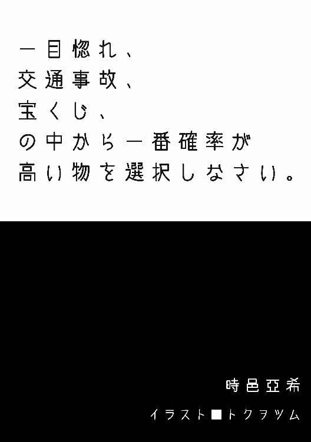
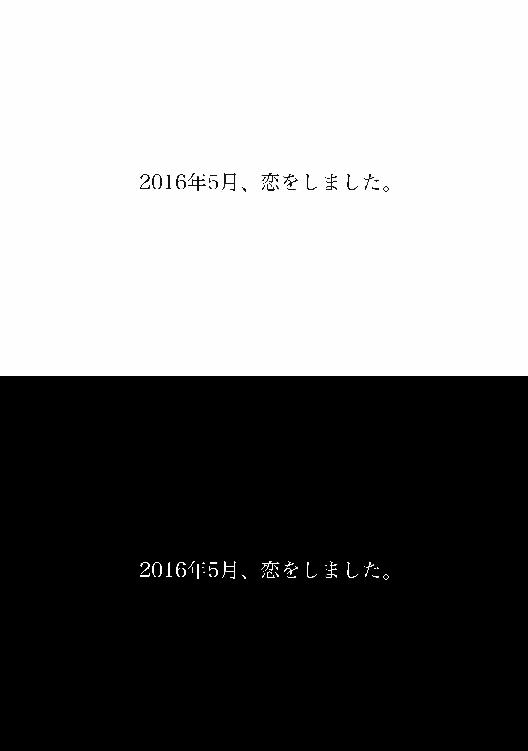
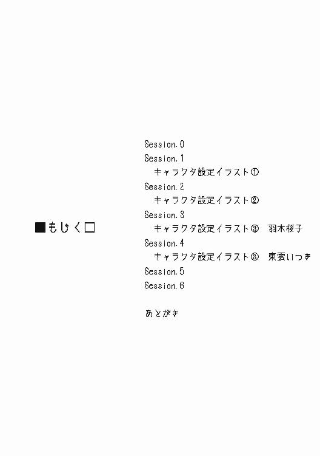
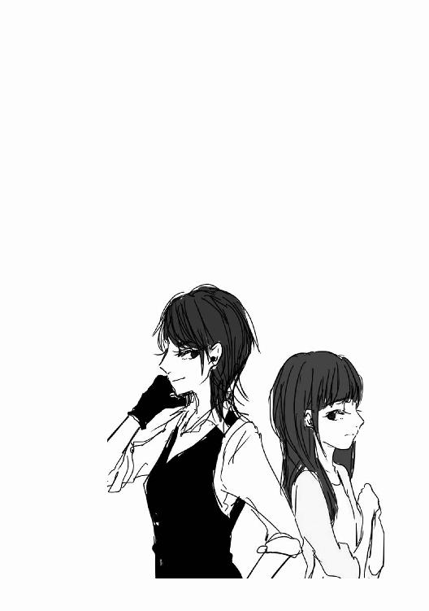
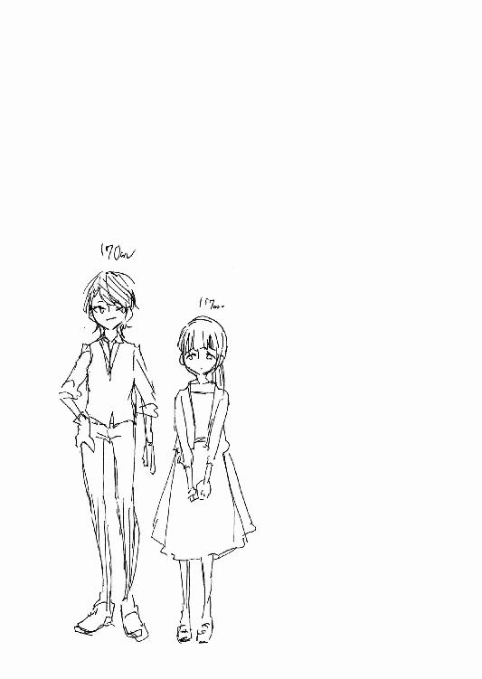
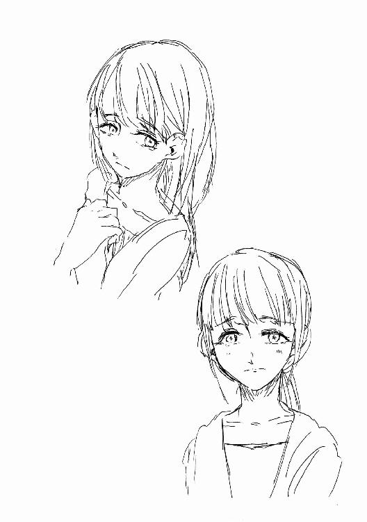
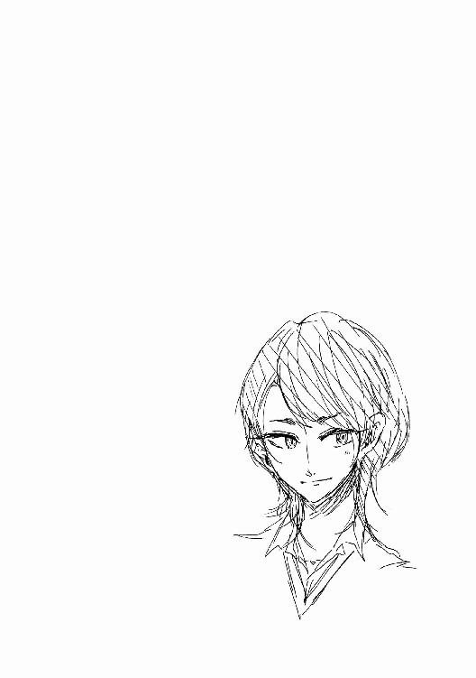
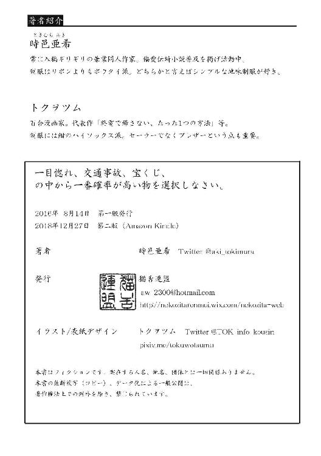
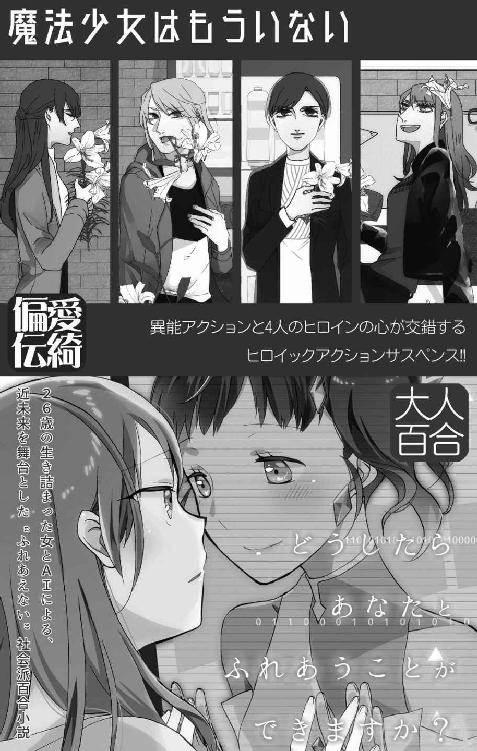
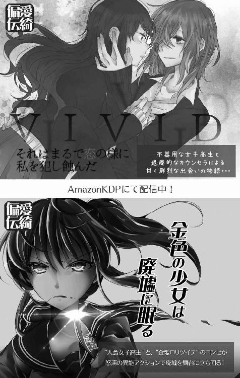

| 一目惚れ、交通事故、宝くじ、の中から一番確率が高い物を選択しなさい。 (猫舌連盟) | |
| 時邑亜希 | |
| 時邑亜希 (2018) | |
| Tags: | 偏愛伝綺, 百合, 新伝綺, ライトノベル, 大人百合 |
偏愛伝綺小説（百合×新伝綺）



Session.0
私、羽木桜子二十六歳は運が無い。そう言ってしまうとどうにも軽い言い草に聞こえるかも知れないが、ちょっと深刻なレベルで不幸である。幸運値というのは言わばかけ算のような存在なのだ。その人の全ての行いにかかる絶対的な補正値が悪いのだから私の人生は......想像に任せるが、あまり恵まれた物でないことは確かである。
ただ、別にそこまで卑屈に感じているわけではない。そういう欠点がある、という程度にしか捉えてはいない。幸いにも重い病に悩まされてはいないし、どうにかこうにか契約社員という立場だけれど仕事にもありついて日々を過ごしている。もう死んでしまったけど両親もちゃんとした人間だったし、借金も無い。最低の呪文だが、世の中、下には下がいる。
なので、出来るだけ日々を前向きに生きるよう努力している。喩え電車に乗れば遅延しようとも、痴漢に遭おうとも、ＩＣカードのエラーで改札が閉ろうとも、悲観的になる必要はない。ホームに突き落とされて人身事故になることに比べたら、こんなのなんでもないのだから。
これだけ日々不幸ならいっそ宝くじとか買ってみたら案外当たるんじゃないだろうかと思い立ち、なんの気の迷いか購入してみた。まぁ、たぶん当たらないだろう。一説に宝くじに当たる確率は交通事故に遭う確率より低いらしい。
ここまでの導入で察しが良い人は先の展開が読めましたよね？ えぇ、お察しの通り。宝くじを買ったその帰り道、車に轢かれました。
ホント、不幸です。
Session.1
七月某日。年々上昇する気温は留まることを知らず、日本って亜熱帯を卒業して熱帯に進化したのでは？と疑問を感じずにはいられない毎日。私は涼しい事務所で経理書類を処理しつつ雇い主の帰還を待っていた。エアコン万歳。
五月の事故は中々希有な内容だった。まず目の前で小さな子どもの乗った自転車が転倒。とっさに大丈夫？と駆け寄ると、背後から電動自転車に乗った母親が叫びながら凄い勢いで突進。どうも私が転かしたと勘違いしたらしい。で、まずその電動自転車に撥ねられる。最近の電動自転車、あれはどう考えても自転車じゃない。原付の類いだ。その運動エネルギーによって私は車道にはじき飛ばされ転倒。そこを運悪く通りかかった自動車に接触。結果、足首に罅。肋ニ本。その他擦り傷多数で全治二ヶ月、内入院一ヶ月の交通事故と相成った。
そして更に事態は複雑で。その母親が私を訴えてきたのだ。私と接触したことによりその母親も落車し、腕を骨折するなどの大怪我を負っている。その責任は全て、紛らわしい行動を取った私にあるのだとか。
更に更に運悪く、その人の旦那がちょっとややこしい系というか、そういう権力者っぽい人だったみたいで。お金も、権力も、人脈も、知識も、運すらも無い私としてはもうどうすることも出来ず、このまま泣き寝入りを余儀なくされる状況だった。
そんな状況を救ってくれたのが私の加害者さん。ややこしい言い方だけど、私を車で轢いた人だ。私が勝手に飛び出したのだからこの人自体に落ち度は全くないのだけれど、道路交通法上運転者側は基本不利とされる。
揉め事を起こしたくないという判断からか、私から何か言う前に向こうから治療費と慰謝料を支払うので示談にして欲しいという申し出があり、訴える気の無かった私はそれに合意。そんな交渉の最中に飛び込んできた訴訟の話に、この加害者さんはその件も全て一任して貰えれば良いようにしてみせますので安心して下さいときたものだ。
そしてこの加害者さんの補償はそれだけに留まらず。一ヶ月の入院と一ヶ月の松葉杖生活で契約社員はクビになることを知ると、自分の事務所で働かないかと言ってくれたのだ。聞けば事務というか経理というか秘書みたいな人を雇わなければならないけど、信用商売なので知らない人を雇うのはちょっと難しく困っていたのだとか。それなら尚更私なんて信用出来ないのではと聞くと、冗談めかして「裁判が終わるまでは少なくとも私を信用してくれますよね？」と返された。要は足下を見られているのだろう。足下ぐらぐらなのは事実だし、裏切る程の器量も度胸もないのだからその見立ては大いに正しい。結果、ちょっと妖しいけれどこんな美味しい話乗らない手はないと飛びついて、今に至るというわけである。
そしてその雇い主が今帰還したようだ。
「た～だいまっと。あー疲れた。羽木さん、電話とかありました？」
東雲いつき二十五歳。アスリートのようなスタイル抜群の長身に、肩までの髪がよく似合うイケメン女子。ストレッチの効いた黒のパンツに白い無地シャツと、パンツと揃いの黒ベストを着て腕まくり。どこの男装の麗人かと思う出で立ちだけど、これがうちの所長の基本スタイルだ。
株式会社東雲総合サービス。主には個人警護や調査を請け負う東雲さんの個人事務所のような会社で、ＳＰとか探偵とか、そんな感じの何でも屋さん......だと思う。まだ勤めて一ヶ月程度だし、そこまで詳しい業務詳細を把握しているわけではない。でも、経理処理していれば少なくともこれは分かる。この人、結構稼いでいる。
「おかえりなさい。関係ありそうなのは......新しい相談が一件です。後でご覧下さい。あと、荻原さんからお昼頃一度連絡ありましたよ」
「あーたぶん今度の件の打ち合わせかな。了解、またかけときます」
「お茶、飲みます？ 外暑かったですよね」
「ビールがいいでーす！」
ですよね。流石にもうこの人の行動パターンは読めつつあります。今日はもう急ぎの仕事はないのだろう。冷蔵庫から銀色の500㎖缶を取り出し、常備されているビアグラスと共に持って行く。事務所のソファに行儀良く座って、まるでしっぽを振って餌を待つ犬のような東雲さん。シャツのボタンは第三まで外されており、はだけた胸元から覗く意外とボリュームのある胸に目がいってしまう。ホント、何から何まで私と対比的な人だこと。
「ありがとうございます。羽木さんも飲みませんか？ もう上がってもらっていい時間ですし」
「......じゃあ、お言葉に甘えて少しだけ。あ、お食事まだですよね？ 朝お話されてた裏の神社でのお祭り。夕方行って焼きそばとか焼き鳥とか買っておきましたよ」
「素晴らしい！ いやぁ～ホント羽木さんを秘書にして良かった。ここの地元のお祭り、屋台が美味しいんですよ。ザ・ジャンクの極みって感じで」
それは食べ物として褒め言葉なのだろうか。疑問を感じつつも、小さめのグラスを手にソファの向かいに座る。どうぞどうぞと注ぐ麗人。また注ぎ方が上手で綺麗な泡の黄金比が出来上がる。お疲れ様でしたと乾杯して一口。涼しい部屋で仕事してたわけだし、私は別に疲れているわけではないけど、それでも仕事の後のお酒はホントに美味しい。......あまり強くないので飲み過ぎ注意だ。
「もう夏ですね～。羽木さん旅行とかは行くんですか？」
「私は特には。両親のお墓もこっちですし、遠出はしない予定です。東雲さんは？ そういえばここ、お盆休暇とかどうされるんですか？」
「五日間、七月～九月の間で好きに休んでいいですよ。私はお盆も案外依頼入りますからここ数年は適当ですね～。というか、私別に出勤って感じで働いてるわけでもないですし」
個人事業主はそういうものなのかな。因みにこの事務所のあるビルは東雲総合サービスの出資元が所有するビルで、上の階は東雲さんの自室である。一階ガレージ、二階事務所、三階自室といったレイアウト。ちょっと繁華街からは離れたところにあるとはいえ、これだけの新しいビルに事務所兼自宅を構えるのだから。私とほぼ変わらない年齢だというのに凄い話だ。
「あ、それだったらせっかくだし一緒にどこか行きましょうか！ ほら、社員旅行的な感じに。別名税金対策」
「社員旅行......ですか」
「あれ？ あんまり好きじゃないですか？」
「......いえ、その......すみません、そうですね。あんまりいい印象が無くて。......以前勤めていた先で温泉に行ってトラブルとか、あったりしまして......」
「そうですか。でも、それだったら尚のこと、そういう嫌なイメージ吹き飛ばせるいい経験になればいいんですけど......まぁ、無理にとは言いません。でも前向きに考えておいて下さいね」
「......はい」
過ぎたるは猶及ばざるが如し、か。思い出の塗り替えは確かにいいかも知れない。東雲さんとの旅行なら安心して楽しめそうだ。おそらく、旅先では美味しいお酒や食べ物をたらふく食べ歩く工程になりそうな予感がする。
これまで余裕のある暮らしをしてこなかったのもあるけど、私は元来食事に興味がある方ではない。それでも、東雲さんが知る人ぞ知る老舗おまんじゅうを見つけたのでとか、出先でつい美味しそうなケーキがあったのでとか、外から戻る度に色んな美味しい物を買ってきてくれるものだから、出会ってからのこの二ヶ月ですっかり食いしん坊になってしまった感がある。
「ん？ どうかしましたか？」
向かいで油ギットギトの唐揚げを美味しそうにほおばり、糖質一切カットしてないビールをグビグビ煽るスタイル抜群女子。対して、筋肉とか無縁で、全体的に華奢なまな板体型の私。今まで食べてないから大丈夫だっただけで、このまま同じ食生活をしていたらきっと取り返しのつかないことに......
「......運動とか、出来るところがいいかもです」
「運動ですか？ 夏のスポーツ......海ですね！」
あ、それもっとダメ。水着とか死刑宣告です。
そうやって雑談してると夜も更けて。そろそろ帰りますねと席を立つ。お酒も飲んでるし危ないから送りますよと提案されるが、それは流石にと断る。個人ＳＰなんてことをやっているせいか、東雲さんは基本的に過保護でジェントルなのだ。私が先月まで松葉杖だったのもあるのだろうけど、立ち上がるときには手を貸してくれるし、どこかに行くときには送ってくれようとする。生まれてこの方、こんなお姫様扱い受けたことのないこの身としては正直戸惑いが隠せない。東雲さんの顧客の多くは要人女性だが......うん、リピートしたくなる気持ちがちょっと分かってしまう。宝塚ファンの人とか、ホントたまらないんだろうな。
ビルを出て夜の町を歩く。足はまだちょっと違和感があるけど、そんなに悪くない。日常生活には支障が出ないレベル。おそらく後遺症もほとんど無いだろう。運がいい。
そう、運がいいのだ。私とは無縁とも思えるこの単語だが、東雲さんと出会ってから無関係な言葉ではなくなった。怪我の程度も、仕事も、そして人間関係も......
だから、油断をしていたのかも知れない。惚けた頭に冷水をかけられる感触。あぁ、やっぱり私はそっち側の人間なんだって。
気がついたら周囲を囲まれていた。見覚えのない男が四、五人。ねぇどこ行くの？ なんて軽薄な声。一緒に飲みに行こうよと横を併走されて。その後はあれよあれよという間に壁に押しつけられた。壁ドーンとか、よく分からない言葉を話して爆笑していらっしゃる。随分とお酒が回っているのだろう。この後の展開もテンプレ通りに違いない。......最悪だ。でも、死ぬことはないだろう。なら、無駄な抵抗は止めておこう。そうすれば時期に解放されるはず。ホントに......不幸だ。
どうにも私は、人の心を煽る性質があるらしい。嫌な気を発しているというのが分かり易いだろうか。私といると周囲の人は私を陥れようとしてしまう。殴ろうとしてしまう。騙そうとしてしまう。責め立てようとしてしまう。迫害しようとしてしまう。追放しようとしてしまう。略取しようとしてしまう。その行いの大半は法に触れる行為に至る場合が多いものだから、結果相手は罰を受けることになる。つまり私の不幸によって、周囲の人間も不幸になる。疫病神なんて言葉、私の為にあると言っても差し支えない。
そうして、また私の撒き散らす災厄により外道に至ろうとする男たちが今目の前に。あぁ、神様ごめんなさい。彼らはお祭りの日にちょっと飲み過ぎて気が大きくなってしまっただけの酔っ払いなのに。それが私という害毒とすれ違ってしまったが為に、残りの一生を犯罪者の汚名と共に過ごすことになるのです。本当にそれは......ごめんなさい。
◇
「おっまわ～りさ～ん！」
出来るだけ明るく、大きな声で叫ぶ。しかし時間はもうすっかり夜遅く、場所は繁華街からちょっと離れた高架下。声は悲しく響き、なんの反応も返ってこない。やれやれ、これだから地方都市は。夜の闇が深い深い。
彼女を取り囲んでいた男たちは私の声に気付き、何事かと警戒を露わにする。こんなことなら先手必勝で先に手を出しておくべきだったな。
「なんですか？ 僕ら取り込み中なんでよそ行って下さい。つーかさっさと失せやがれボケ!!」
「穏やかじゃないなぁ。それに何って、そんなの決まってるじゃないですか。強姦行為に取り込み中の童貞集団から、私の可愛いお姫様を助ける為にお巡りさんを呼ぼうとしただけですよ」
ざっと見回して相手は四人。お酒も入っているのか足下おぼつかないヤツもいるし、まぁ、なんとでもなるでしょ。アルコール摂取に関しては私も同じだけどね。
一度は見送ったものの、やっぱり心配になって追いかけてみればこれだ。ホント、目が離せないよね羽木さんは。どれだけ狙われやすいんだか。悪い虫がたかるたかる。そういう私も、その悪い虫の一匹であることは否定出来ないんだけどさ。
売り言葉に買い言葉で煽ったものだから、待ったなしに無言で私に近寄ってくる男たち。血気盛んなことで何より。
それでは、
「東雲いつき、御身を御護りしましょう」
仕事の時と同じ、特殊な金属繊維を編み込んだ黒い手袋をギュッとはめ気合いを入れる。さぁ開戦だ。
一人、先陣を切って駆けてきたタンクトップの男が先手必勝とばかりに私の胸に手を伸ばす。全く、不用意過ぎだ素人め。その手を逆に取り、引き寄せ、ブーツの底で相手の足下を蹴り飛ばす。そうして浮いた体を背負い、相手の腕を捻り上げながら投げ飛ばす。宙を舞う酔っ払い。更に追撃。接地より早く側頭部へ左のローリングソバット。いい感じの手応え。確実に意識は刈り取った。
まずは一人。集団戦闘における心得は、兎にも角にも数を減らすこと。これで三対一だ。
「テメェ!!」
一人があっという間に投げられたことを見て、男たちに怒りと焦燥が生まれる。四対一という数の利から生じていた慢心をぶち壊してやった形だ。心のどこかにあった余裕は瞬く間に無くなり、なりふり構わず凶器を手にする男たち。万が一殺してしまったらとか、そんなことを考える余裕は無くなったと見える。
もっとも、今は彼女が近くにいる状況だ。そんな保守的な考え、とっくに汚染されて残っていないだろう。
一人はお酒の空き瓶を手に。もう一人は警棒みたいな物を取り出して。もう一人は......わぁ、刃物だ。うん、では、私も素手はちょっと心許ないので武装しましょうか。
呼吸を整える。腰を落とし、内氣を巡らせる。静かに息を吸い、体内の余分な衰氣を吐き出し、より高密度の旺氣を煉り上げる。そして数える。
ひぃ ふぅ みぃ よぉ
いつむ ななや ここのたり
ふるべ ゆらゆらと ふるべ
まるで陶芸家の手つきのように。はたまた太極拳の構えのように。両の手で何もない球体を煉り上げるかのような仕草を取る。その間に男たちは私の直ぐ側まで接近。今正に凶器を振り下ろされたところで、私の煉氣は完成する。
「東雲式煉氣咒方 恒煉華」
拳をぐっと握り、煉った旺氣の塊を両の手に纏わせる。その主な効果は単純な硬化と、相対した物質に対する物理エネルギー乗算。
振り下ろされた空き瓶を拳一つで粉々に砕く。やろうと思えば素手だけでも出来なくはないが、ここまで綺麗に粉々には出来ない。
砕けたビンを呆然と見送る男。相対しているときに視線を外すとはお馬鹿さん。直ぐさま力一杯の前蹴り、通称ヤクザキック。股間を押さえ、男が泡を吹いて崩れ落ちる。女の私にはその痛み、さっぱり理解出来ない。
続いて警棒。これこそ煉氣の真骨頂。横薙ぎに振るわれる警棒を真っ正面から拳で打ち付け、はじき返す。二発、三発、四発と繰り返すと、カランカランと、警棒が音を立てて分解され、アスファルトに転がり落ちた。これまたあり得ない光景に呆然と地面に転がる警棒と私の拳を見比べる男。男の目には私の手は黒い手袋に覆われているだけに見えているのだろう。その拳で裏拳一閃。顎を軽く撫でてあげれば、運動エネルギーの乗算によってヘビー級ボクサーのアッパーと同じ威力をお見舞い出来る。そんなのを受けた男はもちろんノックアウト。
さぁ、このまま最後の一人。次々と倒れる仲間に、何が起っているか分からずただ慌てふためくだけの最後の男。羽木さんを人質にするのかと思いきや、混乱が極まったのか刃物をぶんぶんと振り回してヒステリックに叫びだした。ヤレヤレ、危ないことこの上ない。さっさとケリをつけよう。
足下に落ちる警棒の残骸を蹴り上げ、狙いを定め、ベストタイミングで煉氣を纏った拳で殴り飛ばすと同時に全力ダッシュ。警棒の残骸は男のナイフに見事直撃。安物の刃物はポッキリ折れ、手を押さえてうずくまろうとする男。そこへ飛びかかり、回転の踵落としでコメカミ強襲。はい、終了。
あー......ちょっとやり過ぎたかも。感覚的に内臓損傷とか複雑骨折は無いと思うけど脳しんとうは確実か。訴えられでもしたら困るのでちょっと保険をかけておこう。男たちの懐を探り、免許証を拝借。スマホでそれぞれ写真を撮って、とあるところに送信っと。まぁ、これで何とかなるでしょ。......怒られるだろうけどね。
「よし、後始末完了。それじゃ行きましょうか」
手袋を外して指し出した手の平に、おずおずと手を乗せてくれる。ちょっと手が震えている。まぁ当然か。では、ちょっと強引にエスコートしましょう。にっこり笑いかけてから手を握り引き寄せ、足早にこの場を立ち去りましょう。
現場から少し離れた頃、ずっとと繋いだままだった手を羽木さんはいじらしくもじょもじょさせ出す。......離した方がいいかな？ いいえ、ここはせっかくのチャンス。握り続けるべきですと私の中のデビルが主張する。
「あの......どうして」
「ん？ や～だって今日の羽木さんはほろ酔いで可愛いから入れ食い状態で危ないんじゃないかって思って。気を付けて下さいね。羽木さんは、羽木さんが思ってるよりずっと可愛いし魅力的なんですから」
そう、この人は自分をかなり過小評価するきらいがある。確かにアイドルのような眩しい魅力があるわけじゃない。表情はいつも自信の無さからか曇りがちだし、姿勢も肩を落としていることが多いせいかあまり良くはない。肌もちょっと荒れ気味だし、手も二十六にしてはカサカサ。髪もお世辞にもヘアケアが行き渡っているとは言える状態じゃない。
でも、人間の魅力ってそういうのだけじゃないと思う。例えるならそう、太陽と月の関係のように。恒星のように眩しい魅力を持つ人もいれば、月のように静かで優しい魅力を持った人もいる。羽木桜子という女性の魅力はそういう種類のものだ。
相手からの光を受けて輝く月のごとく、その魅力は見る人によって異なるだろう。私から見れば......時折見せてくれるちょっと照れながらの笑顔がとんでもなくキュートだと思う。あと、身長が私より十五センチ近く低いので上から見下ろすとちょっと、その、胸元がね。華奢な体とバランスばっちりの控えめバストなんだけど、それがまた退廃的なエロスといいますか。それと入院中にラッキー☆スケベがあって偶然目にしたんだけど、肋骨～お腹へのラインはヤバイ。涎でそうなくらいドエロい。
そして何よりも、私が一番好きなのは伏し目がちな垂れ目。もうめっちゃ可愛い。これで二十六歳ってことは、この人このまんま歳を取っていくんだろうなって。最近流行のメイクに乗せられて同じ顔した女子が多い中、ホントに希少な存在だ。
私の趣味思考は決して一般的じゃない。お察しの通り、色んな意味でマイノリティだろう。でも、私は羽木桜子は可愛いって感じてるんだから、私の世界においてはそれが真実で、絶対的正義だ。羽木さん可愛い、大好き。
「もう、ダメですよ。お世辞はもう少し上手く言わないと。私はそんなんじゃありません。体質なんです、人の悪い部分を煽りやすいというか。でも......助けて下さってありがとうございました。最近ちょっと油断してましたね」
そう言ってあははと軽く笑う羽木さん。その諦めたような笑い、私は好きじゃない。
「東雲さんも気を付けて下さいね。あんまり私と一緒にいると気付いたら私の不運、うつってしまうかも知れませんから」
「前にも言いましたけど、私には羽木さんのその体質、効果ありませんからね」
「交通事故の加害者になった時点でかなり影響受けてますよね」
「結果、優秀な秘書を雇えたのでプラスです」
「......前向きですね」
「えぇ。それが私の体質ですから。羽木さんはもっと私を頼って下さい。羽木さんは人に頼らな過ぎです。色々あって臆病になってるのかも知れません。でも、何度でも言いますよ？ 私は例外です。裏切りません。欺きません。全面的に羽木さんの味方です。もうバンバン頼って下さい」
「......頼って、助けてもらっても、私は何もお返しが出来ません」
「私が羽木さんの力になりたいだけです。ありがとうって言ってもらえたらそれだけで私は幸せです」
羽木さんからの感謝の言葉なんて、私にとっては最上級のご褒美だ。その為に命を張る価値はある。
「東雲さんがそれで良くても、私には一方的に恩を受けてるっていう罪悪感が残ります」
生真面目というより、人の好意を素直に信じ、受け入れることが出来なくなっていると言った方が正しいか。羽木桜子という女性を雇う際、当然その身辺調査を行った。まだ完全版を読んだわけではないが、一次報告書によると彼女は相当数、人の悪意による不幸に見舞われている。最初は甘言を持って近付き、最終的には彼女を陥れる。やがては私もそうやって離れていくんじゃないだろうか、そう考えているのかも知れない。信じて下さい。言葉でそう言うのは簡単だ。でも、ここまで他人への不信感が蓄積されてしまった人間は、そう簡単に考えを改めることは出来ないだろう。なら、何か別の理由で納得してもらうしかないか。
「じゃあ、私に頼った分だけ、羽木さんの出来る範囲でいいので誰か別の人に親切で返してあげて下さい。電車で席を譲るとか、地図を見て悩んでいる外国の観光客に声をかけてあげるとか、道に落ちているゴミを拾ってゴミ箱に入れるとか、そういうのでいいです」
「それって、東雲さんは何も得しませんよね？」
「そんなことありません。羽木さんから親切を受けた人がまた次の人へ親切をして、その人が更に次の人へ。そうやって周り巡っていつかは私に。優しい世界の完成です。こういうの、幸せスパイラルって言うらしいですよ。昔アニメで見た記憶があります」
綺麗事なんだとは思う。でも、本当にそうやって親切が溢れる世の中になれば。それはとっても素敵なことだと、私はそう夢見ている。これは嘘偽り無い本音だ。
「そう、ですか。直ぐには難しいかもですけど......一応、善処します」
そう言って羽木さんはちょっとだけ、優しく笑ってくれる。うん、その笑顔は好きです。少しずつでいいから意識改革を促していこう。幸いにも私はポジティブシンキングに関しては自信がある。そうやって地道にやっていけば、羽木さんを取り巻く異常なまでの衰氣も、少しは薄れていくのかも知れないから。
「まぁ今日は結果的には羽木さんと月夜のデートが出来る訳ですし。結果オーライですよね」
「もう、だからからかわないで下さいって」
ヤレヤレとまた笑ってくれる。その微笑みが見れるなら、私は喜んでピエロになりましょう。いつか１００％の笑顔を見せてくれるその日まで、私が貴女を護ります。誰かが貴女を傷付けるなら、その刃を防ぎ、傷を舐めて癒やしましょう。心ない言葉が貴女を貫くなら、耳を塞ぎ、甘い言葉でその胸の穴を埋めましょう。セカイが貴女の存在を許さないなら、私だけは貴女を欲し、その体を抱きしめましょう。不幸が貴女を陥れるなら、私がその不幸を上回る幸せを運びましょう。だって私は―――
「今日は家まで送りますって言っても、流石に断りませんよね？」
「......はい、ではお願いします」
羽木さんが月夜に照らされる。そう言えば今日は満月の三日前だ。バイオロジカルサイトの法則という、月と人の関係性を示した法則によると、今日が一番心理的影響を受けやすい日のはず。人が凶行に走り、事故や事件が多い一日。だからさっきの男たちも、羽木さんの衰氣にあてられて箍が外れてしまったのか。月は人を狂わすなんて、迷信だと思っていた。でも、彼女と出会った今は、それを迷信と笑い捨てることが出来ない。
「......今夜は月が綺麗ですね」
そう言って眩しそうに空を見上げる羽木さん。煌々と光を放つ少しだけ欠けた月。少し歪な状態が尚人の心を魅了する。出会ってからこっち、魅了されっぱなしだ。
しかしホントに綺麗な月だこと。......ん？ 月が綺麗？ どっかでそれ聞いたことある気が......
「あ、夏目漱石ですか？」
「え？ あ、ち、違いますよ？」
「あははは、ですよねー」
......なんだ、違うのか。普通この状況で、そんなこと言われたら流石に意識してしまうでしょ？
だって私は、羽木桜子という女性に、一目惚れをしてしまっているのだから。

Session.2
「とまぁ、そんなことがありまして」
「その月の話、実は創作って話もあるわよね」
「え、感想そっちですか？」
移動中の車内後部座席にて。最近どうなのと聞かれたので、羽木さんとの心温まるラブストーリを語り聞かせたらそんな微妙にずれた感想を返された。そういう返しが欲しかったんじゃないんだけどなぁ。
声の主は荻原葉子という才女。東雲総合サービスの１００％出資元である荻原家直系の人で、まだ三十と若いのに、権力とかお金とか色々ヤバイ人である。見た目おっとりした優しいお姉さんだけど、偶にマジ怖いので注意が必要。私の逆らってはいけない人ランキングＴＯＰ３に入る存在です。
「確かに漱石は英語も堪能だったから、日本人の奥ゆかしさを表現する為にそういう言葉を残していてもおかしくないわ。因みに、逸話として残っているのは『綺麗』じゃなくて『月が青いなぁ』だったはずよ。それも出典無しで、漱石がこんな訳をしていたんだっていう第三者同士の対談だったからしら」
「葉子さんが結婚出来ない理由、私なんとなく分かった気がします」
「出来ないんじゃなくてしてないだけよ。そこ、日本語を間違わないようにね」
にっこり笑いかけられる。失言失言。マジ怖えぇ。
「でも実際、月が綺麗ですねって言われて、それが告白だと気がつくかしら？」
「んー、この話知ってて、尚且つ相手が自分の好きな人だと気付く、というか期待しちゃいますね。私がそうでしたし。でも逆に、自分の意中の人じゃなかったら、『はぁ、そうっすね』くらいの返しをしてしまいそうです」
そういう意味では相手の胸中を探る言葉として有効なのかも知れない。恋愛に臆病な日本人にうってつけのマジックワードだ。
「因みにそういう葉子さんは？」
「そうね......これが創作かも知れないって知った上で、それでも使ってくれるなら素敵かも。そういう奥ゆかしい男性、私は好きよ。でも、漱石が言ったって信じて疑わない人はＮＧかしら」
「わーめんどくさい」
「え、何？ いっちゃん反抗期？」
葉子さんの小さい手でアイアンクローされた。別に痛くないんだけど、耳元で聞こえるか聞こえないかギリギリの音量で『この前のもみ消し、どうなっても知らないわよ』とか囁くの止めて下さい、ホントに怖いっすから。
「最近どうにも反抗的よね」
「滅相もない。今も昔も、私は葉子姉さんの信奉者ですよ。忠犬ハチ公ですワンワン」
言ってて我ながら嘘臭い。まぁ、こんなのただの冗談の応酬だ。言葉に大した意味は無い。
「あっそ、ありがと。じゃあそんなワンちゃんにご褒美」
はい、とタブレットを渡される。表示されているのは羽木さんの身辺調査の追加報告書。
「なんかこういうの結婚前の調査みたいですよね」
葉子さん、盛大なため息。あ、止めて下さい。そんな可哀相な子を見るみたいな目で私を見ないで。
気を取り直してタブレットを見直す。大まかな事情は前回の調査報告書で目を通していたが、今回は更に掘り下げた内容らしい。
ざっと言うと、羽木桜子とは不幸の代名詞みたいな人間である。あまり裕福な家庭の生まれではないが、両親はいたって真面目で健全な人だったらしく、人格面は良好に育っているようだ。
その両親は中学の頃に事故で死別。その事故は彼女も巻き込まれており、どうやら体にちょっと傷が残っているらしい。まだ見ていない。いつか見たいな。
中卒で地元企業の事務員として就職するも、２００８年リーマンショックで解雇。当時十八歳。ここから転げ落ちるように履歴はボロボロ。プライベートも散々で、事故や事件にも多数巻き込まれて、同じ女性の目から見れば目を覆いたくなるような経歴が記されている。
「これ、私見る必要ありました？」
出来れば見なかったことにしたい事実がいくつか。薄々気付いてはいたが、こういう手段で知ってしまったのはちょっと卑怯というか。
「雇用責任、かしら。猫拾うんじゃないんだから、羽木桜子を雇うということは、そこに書いてあるのと同じ不幸を繰り返さないよう努力する義務があると私は思っているわ。だから見せました。どう？ 怖くなった？」
「まっさかー。むしろ一層幸せにしたいって思いました」
「例え、彼女がいっちゃんに靡かず、別の男と一緒になっても？」
ぐっ、返答に詰まる。でも、それも彼女の選択だ。ここは素直に羽木さんの幸せを祝福......出来るかなぁ。
「まぁ、そうなるわよね。即答出来る方がちょっと嘘っぽいし。性別だけをいえばいっちゃんに靡く可能性低いけど.........過去の遍歴もノーマルみたいだし？ まぁ、いいでしょう。そのときは荻原である程度働き口を斡旋します。でも普通の勤め先だと彼女、そこでまた不幸に見舞われるでしょうね」
彼女を取り巻く異常な衰氣は、きっとどこに行っても不幸を運んでくることだろう。
衰氣、というのは人間の持つ内氣の一つで、一般的にはマイナスの要素が多いものである。この衰氣が濃密になると、人は体調不良を起こしたり、心理的にあまり良くない影響を及ぼすこととなる。羽木さんは周りに常に濃い衰氣を纏っている。だから彼女の周りにいる人間はやがて心身に影響を及ぼし、騙し、裏切り、欺くことになる。羽木さんの不幸はこれによるものが大多数であると言えるだろう。
一応、私も内氣を操る咒方術を不完全ながら身に付けている身なので、ちょっとくらいはそういうのが見える。それ故に分かる。羽木さんのそれは普通じゃない。むしろ、それで今の今まで生きてこれたことが不自然なレベルなのだ。
「本題は次のページからよ。そこまでは前回の資料でもそこそこ書いてたでしょ」
促されて画面をフリック。そこに書かれている内容を読んで、眉間に皺が寄るのを感じる。何この資料？
「羽木桜子の事故と、その経過について。見ての通り。彼女、明らかに死んでいるレベルの事故や事件に巻き込まれても不思議と致命傷は負わないのよ」
それだけ聞くと悪運が強いと判断されるだろう。でも、問題はその次に記載されている数字だ。
「周りの人の方が重傷で運ばれてる率高くないですか？」
「えぇ。統計からの憶測でしかないけど......死ぬ程の事故に遭うとその周囲に同等、もしくは彼女より更に酷い怪我人が出るみたい。この前の交通事故もそうでしょ？ 彼女を突き飛ばした母親の骨折はかなり酷かったらしいわね」
確かに。よくもまぁそこまで偶然が重なって事故になったものだと思ったが、偶然ではないのかも知れない。あの濃密な衰氣。普通ではないと常感じていたが、もしかするとあれは―――
「更に付け加えるなら一昨日、その母親お亡くなりになったわよ」
「―――え？ 今なんと？」
「言葉通り。死んでしまったのよ。交通事故なんて事故で死ぬより事故後に死ぬことの方が多いものだし珍しくもなんともないのだけれど、今回のはちょっとね」
「や、ちょっと待って下さいよ。あの母親は私も見てますけど、自転車から落ちて腕をやっただけで脳も内臓も無事だったはずですよ？ 死因は？ 実は頭打ってたとか」
そもそももう事故から二ヶ月だ。流石に今更突然死はあり得ないだろ。
「後遺症じゃないわ。新たな交通事故による事故死よ。もう一度車に突っ込まれたんですって」
あり得るのだろうか、そんな偶然が。確かに交通事故に遭う確率は今の現代社会においては決して低い数字じゃない。誰もが交通事故の被害者になり得る。しかし......ちょと薄気味悪い。
「この調査結果から、荻原では羽木桜子は何らかの咒方術による加護、もしくは呪いを受けていると見ているわ。一族的な繋がりを考えればおそらく先天性ね」
「生まれる前からってことですか？」
「そう。神がかった奇跡の加護や、根の深い呪いは世代を超えるって言うでしょ」
不幸だけど死なない呪い。矛盾するがあり得ない話じゃない。死ぬよりも苦しい地獄を見せてやるとか、そういう類いの怨恨があったのかも知れない。
「これ、調べるだけ調べて荻原的にはどうなんです？ 今更羽木さん雇うのダメって言われても従いませんよ？」
「調査自体はただの保険みたいなものだから気にしなくていいわよ。ただ、一番近くにいるいっちゃんに知らせておこうってだけ。これだけ根の深そうな症状、ちょっとやそっとで解決できるとは思えないし。それに、衰氣が原因であるならいっちゃんが近くにいるのが最適でしょうしね。これは個人的な意見だけど、本当にいっちゃんが好きになったって言うなら私も協力を惜しま―――ねぇちょっと、聞いてる？」
「今、羽木さんそっくりな子が通りませんでした？ 今日外にお使い頼んだんですよね。あぁ、大丈夫かなぁ。ホントに羽木さんって妙にエロいんですよ。また変な男に声かけられたりしてないかな。夏場の薄着とか危険だし......あ～心配だなぁ」
葉子さんが盛大なため息と共に、私に力一杯のデコピンを放つ。うん、お嬢様デコピンなんて痛くも痒くもなんともないですよー。
「ったく、恋愛には興味ありませんとか散々言っといて突然これだから困っちゃうわ。もうじき現地到着よ。今日はあんまり穏やかじゃない会合って聞いてるから、ちゃんとお務め果たして下さいな？」
「仰せのままにマム。東雲いつきは荻原の忠犬ですから。命に代えても御護り致しますよ」
いつものように手を取って甲にキス。さて、家で帰りを待つ妻の為にも稼がねば。誠心誠意、お仕事に励むとしましょう。
◆
......暑い。ここのところ事務作業ばっかりでろくに日中外に出なかったせいか、何だか暑さに弱くなっている気がする。肌に張り付く服が気持ち悪い。かといって上に羽織っているカーディガンを脱ぐと下着が透ける可能性があるし......外に出ることになるのであれば、いつもの冷房対策服じゃなくてちゃんと半袖のブラウスなり着てくるべきだった。ホント、ついてない。
ともあれ、東雲さんからお願いされたお使いの書類提出＆資料受け取りは無事完了。冷たい物でも買ってさっさと事務所に戻ろう。
女性らしさと無縁の貧相な体で全体的に骨と皮が目立つ為、暑さに強いと思われがちだがそれは大きな間違いである。私はものすっごく暑さに弱い。体温調節機能が今ひとつ不良品らしく、暑いと直ぐにのぼせたみたいに顔が真っ赤になるし、突如滝のような汗をかいて脱水症状で干涸らびることもある。自分の体ながらなんて軟弱。
でも今日は本当に暑い。鳴り止まないアブラゼミの鳴き声が意識を奪おうとする。小さい頃、アブラゼミはこんなに煩かっただろうか。もう少しマシだった気がする。もしかすると、これも地球温暖化とかいう都市伝説の一つなのかも知れない。アブラゼミによる陰謀説。......あり得ないか。
改札を抜けて駅のホームへ。構造上風を遮る為、気温が更に一段と上昇する。周囲を見渡すと皆げんなりした顔で夏の日差しを睨んでいる。営業のサラリーマン。小さな子どもを連れた母親。学校帰りの高校生。団扇や扇子でぱたぱた扇いでいる人が大半だ。私も次からは何か持ってこよう。
ふと、俄に周囲が騒がしいことに気付く。騒ぎの方へ目をやれば、改札側からこっちへ髪を振り乱し、慌て、怯えるように駆け込んでくる女子高生。濃紺のプリーツスカートに同色のベスト。白い半袖シャツに唯一のアクセントは臙脂のネクタイ。あれは確か市内の県立高校のものだ。同じ市内にある私立二校がそれぞれセーラ服とブレザーで可愛らしいデザインなの大して、県立校は田舎の学校らしい純朴な制服で大変不評だと聞いたことがある。私は、そのどこにも通うことが出来なかったわけだけど。
そんな地味な制服の彼女はホームに滑り込むように入ってくるなり、神経質に周りを見回し、荒い息を隠しもせずガタガタと震えている。ちょっと普通じゃない。たちの悪いストーカや変出者に追われているのだろうか。それとも、何か変な薬でも......それは穿ち過ぎか。暑さでやられてまともに働かない頭でそんなことをぼんやり考えていたら―――
ソレと、目が合った。
ぞっと、身の毛がよだつ感触。一気に体が冷える。周囲の気温が明らかに下がっている。これはダメだ。私は、この感覚を知ってる。これ以上深入りは危険だ。見て見ぬフリをすべきだ。私には何も出来ないのだから。今すぐここから逃げ出すべきだ！
女子高生がキョロキョロと落ち着き無く周りを見回しながら私の前を通り過ぎようとする。電車接近を知らせるチャイムが鳴り響く。追いかけられている相手が来る前に電車に乗ってしまえば大丈夫だと、そう思っているのだろう。
ダメだよ、お嬢さん。
だってソレは今―――
貴女をホームに突き落とそうとしているのだから。
頭では、分かっている。それでも、つい先日の東雲さんの言葉と、眩しい笑顔が脳裏に浮かぶ。私が東雲さんに受けた恩の分だけ、誰か別の人に親切を。なら、今の私に出来ることは......一つだけ。
女子高生の後ろ、黒いモヤから伸びた白く細い手がドンッと彼女を突き飛ばす。「キャッ」という短い悲鳴と共にバランスを崩し、体はホームから飛び出し電車との接触コース。そして最悪のタイミングでホームへ入ってくる電車。鳴り響く警報音。このままでは目も覆いたくなるような大惨事、となるはずの状況で。白い手が女子高生を突き飛ばすのとほぼ同時、私は彼女と電車の僅かな間に体を滑り込ませ、無い筋肉総動員して踏ん張り、倒れ込む体を支えたのだった。
無事彼女を受け止めた私を、モヤの中にいる顏が認識する。私も、モヤの中に少女の姿を認識する。じっと見て、そして―――にたぁって、薄気味悪く、明らかに悪意のある笑いを浮かべ消えていった。
「ぁ、あの......」
女子高生がこちらを見上げ声を発する。流石に今のタイミングは死んでいた。九死一生とは正にこのことだ。彼女自身ももうダメだと思っていたのだろう。まだ少しぼんやりしている様子。
「大丈夫、ですか？」
「......ぁ、はい」
恐る恐る周囲を見回す。探しているのはおそらくあの黒いモヤ。
「......今は、もういませんよ。消えました」
はっとした顔で私を見てくる。あぁ、やっぱりそうか。この子は、アレに追いかけられていたのだ。
「お姉さん、見えるんですか......？」
頷いて、得意じゃないけど出来るだけ優しい顔で笑いかけてあげる。大丈夫だよって。貴女の恐怖を、私はちゃんと理解出来るよって。
そうしたら女子高生はぽろぽろと泣き出してしまった。開かれる電車の扉。降りてくる人と共に流れてくる車内の冷気。過ぎ去る人が何だ何だと、二人を物珍しそうに見えては、関わりたくないと足早に過ぎ去っていく。
東雲さんの言う優しい世界に、少し近付けたかな？
◇
葉子さんの護衛を終え、事務兼自宅へ無事帰還。今日も中々ハードな取っ組み合いでしたこと。まったく、荻原はもうちょっと敵を減らす努力をすべきだ。こうも恨みを買っていては私の身が保たない。
時間も時間だし、本来ならそのまま自分の部屋となっている三階へ上がるつもりだったが、外から二階の電気が点いているのが見えたので予定を変更する。今日は遅くなるので先に上がって下さいと伝えていたのだけれど。消し忘れか、はたまた何かの用事でまだ残っているのか。残っていたらちょっと嬉しいなぁなんて、そんな浮ついた心を持って二階事務所の扉を開く。
「たーだいま」
「あ、お帰りなさい」
部屋に入るとデスクに座って書類整理をしていたっぽい羽木さんが出迎えてくれる。
「どしたんです？ 残業ですか？」
「ちょっと午後お仕事出来なかったので......それと、彼女のことで......」
羽木さんの視線を追う。応接のソファ。市内県立高の制服を着た女の子が横になって眠り込んでいる。え、何これどういう状況？。
「勝手にすみません。でも、東雲さんにご相談したくて」
顔を真っ赤にしながら申し訳なさそうに俯く。まるで子犬を拾ってきてた子どものように。ならば、お母さん役の私に出来ることは一つだけ。羽木さんの顔を両手で優しく包んで上を向けて。
「何があったのか話して下さい。心配いりません、私は何があっても羽木さんの味方ですよ」
何から話したら良いのかと混乱する羽木さんを落ち着け、順を追って話してもらう。助けた後に彼女から事情を聞けば、ここ数日ずっと見えない何かに付け狙われていたらしい。そんな彼女を宥めてこの事務所連れてきてしばらく、気が緩んだのか眠りこけてしまったのだとか。よほど気が張り詰めていたのだろう。
「付きまとう黒いモヤの中にいた少女ね。しかも笑うんだ」
「あの、信じて頂けないかも知れないですけど......私、その、ゆ、幽霊とか......そういうよくないものが見えることがあるんです......だから、その嘘とかじゃないので......」
「ん？ あぁ、大丈夫ですよ。疑ってなんかいません。おおよそご存じかも知れませんけど、私の仕事柄そっち系の本物な人とも絡みますから嘘だなんて思ってませんって。羽木さんも、それを知ってて私に相談しようって思ったんですよね？」
はい、と申し訳なさそうに返答しつつも明らかにほっとした様子の羽木さん。私がそっち系と仕事上関わりがあることを予想していたとはいえ、見えることの告白はかなりの一大決心だったのだろう。相手によっては精神を病んでいる異常者だとレッテルを貼られかねない。その危険を犯してもこうやって正直に話そうと思ったということは。よっぽど、この子に共感して、力になりたいと思ったのかな。ちょっとジェラシー感じちゃうぞ。
因みに、羽木さんが見えるということは実は想定内である。あれだけ濃い衰氣に日々浸かりおびただしい数の不幸を目の当たりにしているのだ。とっくに境界軸がブレ始めていても不思議じゃない。
「因みに羽木さんはどのくらいのレベルで見えるんですか？ 人によってまちまちだって聞くもので」
「その......見えると言っても......慣れ、みたいなものなので。良くないものがなんとなく分かる......くらいの感覚です」
「なるほどね。で、そんな羽木さんから見てこの子は良くないものに付きまとわれていると」
羽木さんが肯く。なるほど、しかしそっち系か。私不可視のモノは得意じゃないんだよね。
「あの、私の勝手な憶測なんですけど、たぶん彼女............呪われてるんじゃないかって」
へぇ、その単語を知ってるんだ。なら、羽木さんに付きまとう衰氣は加護ではなく呪い？
「その根拠は？」
「......あの感触に近いものを知っているから......じゃダメですか？」
「全然、ダメなんかじゃないですよ。私は境界の向こう側はほとんど見えないんで、その手の感覚は羽木さんの意見を尊重します」
そう、私は見えない。私が扱えるのは内氣、それも旺氣と呼ばれる衰氣の対極に位置するプラスの内氣を運用する咒方術だ。境界視の類いはどちらかと言えば衰氣の運用。残念ながら私にはその素養が徹底的に欠けている。
「まぁ、細かい事情はこの子が起きてから改めて聞きましょうか。確かに私は境界視に関しては素人レベルだけど対策を知らないわけじゃないし」
ほっと胸をなで下ろす羽木さん。もしかしたら私が拒否をするかもと思っていたのかも知れない。心外だなぁ、私は羽木さんのお願いならなんでも叶えてあげる覚悟があるというのに。
......せっかくの機会だ。もう少し突っ込んでみようか。
「羽木さんの不幸も、呪いですか？」
びくっと体を震わせて、まるで怖い物を見るかのように私を見る。ちょっと言い方が露骨だったかも知れない。出来るだけ優しい言い方で補足しよう。
「近いものを知っているって言ったので。私は見えないんですけど、内氣に関してはそれなりに分かっちゃうんです。羽木さん、ちょっと衰氣、まぁ、言ってしまえばマイナスの氣が過剰なんですよ。だからどうしても因果律が負に偏ってしまう。もし、原因を知ってるならこの機会に教えて貰えたらなって。......ダメですか？」
「......いえ、そうですね。東雲さんにはちゃんとお話ししておいた方がいいのかも知れませんし。あの、以前も少しお話ししましたけど、私に不幸が多いのは生まれつきなんです。なので、コレがどういう類いのものなのか、私には分かりません。......母も、それを知りませんでした。でも昔、私が寝ていると思ったのかこんなことを口にしてました。『私たちは、七代先まで祟られた家系なのよ』って」
七代先まで。有名なフレーズだ。その根拠は定かではないが、もしも遺伝を単純な割り算と考えると一代目１００％、二代目５０％、三代目２５％、と続けて、七代先までなると一代目との相似性は１％以下になるからだとも聞く。遺伝子ってそんなに単純なものではないからこれはおそらく俗説だろう。私は、『七代先まで呪えば一族根絶やしに出来るだろう』という説を推している。
「ふむ、だから呪いかもってことですね。しかし七代祟りか......根が深そうだなぁ。うん、ありがとうございます話してくれて。対策考えてみますね。......これって、ちょっとは私、羽木さんに信頼して貰えてるって思ってもいいですか？」
「え、あ、はい......ちょっとというか、事故からずっと、東雲さんに頼りっきりですし今回だって......あの、私嫌な女なんです。直ぐに人に頼ってしまうし、泣き言多いし、頼りないし、そのくせ諦め癖もあるし......」
言ってる側から泣き言で自己嫌悪ワールドに陥っていく羽木さん。うん、まぁ確かに愚痴っぽいところがあるのは認めますけどね。でも、そんなときは。
「えい」
「っ!?」
羽木さんの両ほっぺをぶちゅっと潰すように両手で挟む。ほっぺのお肉が少ないからあんまり顔がへちゃむくれない。何この可愛い生き物。普通誰でもぶちゃいくになるこの行為に耐えるとか。危うくちゅーしそうになったじゃないか。
「言いましたよね。どんどん頼って下さいって。私がそう願ってるんですから、それでいいんです。むしろ私は今回こうやって頼ってくれて、しかも羽木さんの秘密も教えて貰えて。正直ラッキーだなって思ってますよ。まずは状況を精一杯楽しみましょう。後悔とかは後ですればいいんです。もし、またそうやって悩むならそれを直接私に言って下さい。またこうやって」
ぽっぺをなでくりまわしてむにむに動かす。次第に眉間に寄っていた皺も取れてくる。うん、可愛い。
「そんな悩み、杞憂だよって説き伏せちゃいます」
「でも」
「む、あんまり煩いと、その可愛い唇ふさいじゃいますよ？」
そう言うとあんまりに潤んだ瞳で私を見てくるものだから。思わず黙ってしまい―――ばさっというソファからの物音に驚いて二人ばっと離れた。寝ていた少女が寝返りを打っただけのようだ。......びっくりしたなぁもう。
羽木さんとなんとなく見つめ合って、あはははと笑い合う。あぁ、可笑しい。何が呪いだ祟りだ。そんな深刻な話も、私のこの慕情に比べればちっぽけな問題なんだから。その程度の厄介事、この東雲総合サービスがどーんと請け負って見事二人まとめて護り抜いてみせましょうぞ。
「あはは、なんか話が変な方に暴走しちゃいましたね。あー暑い。さて、今日はどうします？ この子あんまり外出すの危険だしウチに泊めることになると思いますけど......どうせなら羽木さんも泊っていきませんか？ せっかくだから、もっと羽木さんのこと聞かせて下さい。そうしたら、その症状の解決策も何か見つかるかも知れませんし」
「そう......ですね。ならお言葉に甘えてもいいですか？」
「えぇ、もちろん。あ、ならシャワーどうです？ 私今日の報告書だけ書いときたいのでその後でいいですし。場所、分かりますよね？」
以前にも何度か彼女を私の部屋に招いたことがある。部屋で夕食を振る舞ったり、私の外出中に自室に置き忘れてきた物を取りに行ってもらったり。そうやって仕事だけじゃなく、徐々にプライベートにも関わらせていこうという緻密な戦略である。......今のところ、まだパワハラと訴えられていない。女同士の特権だ！
「じゃあ、お言葉に甘えて。今日外に出たので汗が凄くて」
「服の場所も、前に教えたので大丈夫ですよね？」
前を思い出してか羽木さんが赤くなる。前に一度私の部屋でお酒を飲んだ際、べろんべろんになってしまい強制的にお泊まりをしてもらったのだ。その翌朝に一通り説明しているので大丈夫だろう。それにしてもあのときの羽木さんは可愛かった。また酔い潰れないかな。
羽木さんが上に上がってしばらく。宣言通りＰＣを立ち上げて書類作業をささっと済ませる。その間もソファで眠る少女は起きる様子が無い。程なく作業も終わったのでなんとなく横に座って眺めてみる。ぱっと見て羽木さんのような酷い衰氣に纏わり付かれているようには見えない。だが、明らかに旺氣が目減りしている。これがその呪いとやらの影響なのか。それとも、一日羽木さんと一緒にいたことが原因なのか......
単純な眠気による睡眠というのもあるのだろうけど、これはもしかすると衰氣酔いに近い状態なのかも知れない。なら、これをどうにかするのは私の得意分野だ。
手を、眠る少女の額にあてる。そしてゆっくり数え、内氣を少しだけ押し出すように送り出すイメージを取る。
ひぃ ふぅ みぃ よぉ
いつむ ななや ここのたり
しきる ゆゐつわぬ そをたはくめか
うおゑにさりへて のます あせえほれけ
私の中にある旺氣を掌に集め、淀んだ彼女の内氣をトコロテン方式で押し出す咒方術。私はジョークでトコロテン浄化咒方とか呼んでるけど、本当はちゃんとした名前があったはずだ。もう覚えていないけど。
処置が終わると随分と顔色が良くなった。うん、これなら問題ないだろう。しっかし、寝ていても分かるんだけどこの子、ものすっごい可愛い。どっかで見たことあるような気もするんだけど......
「......ん......ぁれ？」
そうこうしていたら眠り姫のお目覚めである。やはり衰氣酔いによる昏睡だったのかも知れない。
「今晩は。よく眠れました？」
「......え？ あ、はい......？」
突然目の前に知らない人が座っていれば驚きもするか。夢と現の間を彷徨いながらキョロキョロ辺りを見回している。もしかすると羽木さんを探しているのかな？
「羽木さんから聞いてますか？ ここの所長をしてます東雲いつきです。細かい話は羽木さんもそろってからにしましょうか。彼女、今上の部屋でシャワー浴びてますから。......さてと。ねぇ、お腹すいてません？ 私昼からずっと食べてなくてそろそろ限界なんです。何か食べれそうですか？」
「はい......お腹、私もすきました」
えへへと可愛く笑う。うん、間違い無い。この子めっちゃ美少女だ。うーんそっか、羽木さんこういう子がタイプかー。
「よし、三人分作りますか。卵あるから適当にトルティージャと、ピクルスの作り置き処分したいしそれと、アボカドもあったっけな。砂抜きしたアサリも使っちゃいたいし......あ、頂き物のワインがあったなぁ」
「ワイン！」
「未成年はダメですよ？」
どうしてそんな物欲しそうな顔するかなぁ。
その後私たちも三階に上がり、順番にシャワーを浴びた後、適当にこさえた料理をつまみに女子会みたいなノリでヒアリングを行うことになった。それにしても髪をくくっていないノーメイクの羽木さんたまんないです。めっちゃ幼い！ めっちゃ可愛い！
「あの、東雲さん？ あんまり見ないで欲しいんですけど......流石にこの歳でノーメイクって結構恥ずかしいので」
「ん？ あぁ、いいじゃないですか別に減らないし」
心が磨り減ります！ と叫びが聞こえた気がするけど気にしない。そもそも羽木さんいっつもメイク薄いからあんまり変わんないじゃん。
「えっと、じゃあ改めて自己紹介しておきましょうか。私は東雲いつき。ここの所長です。で、彼女は羽木桜子。私の秘書です」
「事務の間違いでは......」
秘書という言葉を使うと以前から羽木さんは照れなのか拒否を示す。や、ホントに仕事内容的には秘書で間違いないと思うんだけどね。うーん、個人秘書ってエロい言葉だ。
「なんと言われようと羽木さんは私の秘書です。それが嫌なら相棒か助手です」
そんな二人のやり取りに女子高生はうふふと笑ってくれる。うん、お風呂入ってご飯食べて、かなり健全な思考が戻ってきているみたいだ。
「仲、いいんですね。羨ましいです」
「ありがと。さぁ、次はお嬢さんのこと教えて貰えますか？」
「あ、はい。えっと、井駒未来です。戸塚沼高校の一年で、一応、タレントみたいなことをやってます」
タレント？ この年齢、この容姿でタレントというと......所謂それは一つの......
「アイドル？」
「まぁ......そういう風に言われることもあります」
「アイドルってことは何とか48の一人とか？」
「や、そこまで凄いのではないので......舞台や雑誌モデルをちょっとやってる程度です」
ふむ、そう言われると気になってしまうのが人の性だ。スマートフォンで音声認識、「いこまみらい」と呟いて検索。おぉ、一発で出た。ホントにアイドルだ。うわ、何この写真、めっちゃ可愛い。
「おぉ......すごい、羽木さん羽木さんこれ見ました？ 凄いですね、アイドルが私の部屋でお風呂上がりのＴシャツ姿で寛いでますよ」
スマホ片手にはしゃぐ私に困ったような顔で同意する羽木さん。因みに、現在の三人の格好は、いつかのセールで購入したショッキングピンク、ライトグリーン、水色のパステル三色色違いＴシャツだ。下は私ジャージ、羽木さんショートパンツ、井駒さんカーゴパンツというまるで何かのユニットみたいな姿である。あ、言っておくと私がショッキングピンク、羽木さんライトグリーン、井駒さん水色です。
「ゴメンなさいね度々脱線して。で、その井駒さん......井駒ちゃんでもいいですか？」
「はい。あの、敬語でお話し頂かなくても私全然大丈夫ですので......むしろそうして頂けた方が嬉しいです」
「そう？ じゃあ遠慮無く。えっと、羽木さんから大体は聞いてるけど、ぶっちゃけて言って呪われてるの？」
ちょっとぶっちゃけ過ぎだろうか？ でも、他に言いようもないし。私のぶっこみに若干面食らいつつも、私がそういう話を真面目に出来る人なんだと理解したのか、井駒ちゃんが話し始める。
「その、呪いかどうかは分からないんですけど、先々週くらいからちょっとおかしいなって感じはあったんです。でもこういうお仕事してると、嫌がらせとか、ストーカとかって割とあるので、事務所にちょっと話してたくらいであんまり気にしないようにしてたんですけど......一昨日から何か黒いモヤみたいなのが見え出して......ずっととこっち見て笑ってるみたいで気味悪くて。そしたら昨日、遂に足を捕まれて危うく階段から落ちそうになったんです。それからもう怖くて逃げ回って......って感じです......」
「誰かに相談は？ さっき事務所には言ってるって言ってたけど」
「マネージャさんには一応。でも流石にこういうのは信じて貰えなくて。プレッシャーからのストレスだって」
それが真っ当な反応だろう。あっちの世界を知らない人からすれば霊や呪術はファンタジー世界のお話だ。必死に訴えれば訴えるほど頭の可笑しい人だって思われる。
「でも、羽木さんに助けてもらえて、東雲さんにも信じて貰えて。それだけでも私......嬉しかったです」
「そっか、それは良かった。幸いにも、この建物はちょっと特別製でね。井駒ちゃんをストーキングしてる黒いモヤとやらが本当に境界の向こう側の存在なら近寄れないはずだよ。ここに入って安心して眠っちゃったのもそういうのが関係してるのかもね」
状況から考えれば黒だろう。おそらくこの子は誰かから呪われているか、もしくは何かに取憑かれている。
さて、どうしたものか。目の前にはお風呂上がり、あられもない姿で私に対して信頼の眼差しを向けるアイドルと、私のお気に入りの女性。......うん、ここはポイントの稼ぎ時だ。ビールが美味しくてちょっと頭ふわっとしてきているけどもうちょっと真面目に頑張ろう。
「確認だけど、井駒ちゃんは今までそういうの見えたりした？」
「霊感とかそういうのですよね？ いいえ、今回が初めてです。私元々演劇とかやってたんですけど、そういうところって霊感強いって言う人が結構るんです。でも、そういう人が何か騒いでても私には見えなかったですし......」
そういうところにいる霊感強い人は大概自己顕示欲からの虚言か、薬で幻覚見ちゃってる人だからあんまり参考にならないんだけどね。でも、その今回だけ見えるという言葉を信じると、状況はかなり深刻化している恐れがある。もしも怨霊の類いなら彼女への侵蝕度合いが深まり、同期し始めている段階だ。解決は出来るだけ急いだ方がいいだろう。
「あぁ、そうだ。もう一度確認。井駒ちゃんその見えるって話、マネージャさん以外に話した？」
「いえ......マネージャさんに話して相手にされなかったのでそれ以外は......」
「それがいいよ。こんな話おいそれとしない方がいい。吹聴して回ったらそれこそ奇異の目を集めて、呪われているのと大差ない不幸が押し寄せるかも知れないしね。一年くらい前かな、この辺りでサイキック少女が話題になったの覚えてる？」
一時期テレビの取材なんかも来て話題になっていた事件だ。とある女子高生に超能力があるって、TwitterやYouTube等で情報が広がり炎上騒ぎになったのだ。
「覚えてますよ。高校こそ違いましたけど同じ市内でしたし」
「じゃあ最後どうなったのかも知ってる？」
「自殺......ですよね」
あれを自殺と呼んでいいものか判断に困るところではあるけど、一応はそういう報道になっている。虐められ、迫害され、社会的に殴殺され、結果十七歳の少女は死を選んだ。そうするより他に彼女には救いの道が残されていなかった。そういう悲劇だ。
「あれって彼女に本当に能力があったかどうかはそんなに問題じゃないの。論点は彼女が他と異なっていた、もしくは異なるかも知れないという要素を持っていたこと。昔から人間って大衆が絶対正義だから。他と異なるってことはそれだけで悪と成り得る。故に彼女は排斥された。その異なる点が有益なモノにせよ、有害なモノにせよ。アイドルやってるとそういうの、身に覚えある話でしょ？」
「そう、ですね。......はい、気を付けます」
「うむ、素直でよろしい。あと羽木さんも気を付けて下さいよ」
「っえ、私れふか!?」
自分に話が振られると思っていなかったのか、口に含んだパスタをもごもごさせながら慌てて返答する。あんまり慌てたせいかその後ゴホゴホと咽せるお約束付きで。今日のパスタはアサリのペペロン。あ、鷹の爪に当たったみたいで涙ぐんでる。ホントにこの人運が無いなぁ。
「そーです、今回はすんなり引き下がってくれたから良かったものの。相手が悪かったら、逆に羽木さんが取憑かれてたかも知れないんですから。見えるってことはそれだけ狙われやすいってことと同意味なんです。それにもし私がそういうのに理解が無い人だった場合どうするつもりだったんですか。下手すりゃ二人纏めてサイキック少女の二の舞ですよ？」
ちょっと強めに注意喚起のお灸を据えると、羽木さんは申し訳なさそうに謝り、でもちょっと照れたように笑いながらこう言うのだ。
「......でも、東雲さんならまた格好良く助けてくれるんじゃないかって......」
合格、うん、大正解、はい、何とかします。私は羽木さんの愛の奴隷ですからなんでもします。格好良く助けるとか、ちょっとそれどういう言葉のセンス？ わざと？ わざとなの羽木桜子サン？ もしかして私彼女の掌で踊らされてる哀れな猿？
「......あの、お二人ってもしかしてそういう関係ですか？」
「「いやいやいや！」」
女子高生のそんなぶっこみに二人してまったく同じリアクションで返してしまう。それを見て女子高生更に追い打ち。
「あ～、はい。なんとなく理解しました」
「あ、あの......井駒さん？ 違うの、東雲さんは私の恩人でね」
「そうなんですか？」
そこで私の方を向いて小首をかしげる動作をしないで欲しい。更に言うなら羽木さんに見えない角度だと言うことを分かった上で、微妙に私に笑いかけるのも止めて欲しい。ただ者ではないぞ井駒未来。流石は若干十七歳にして芸能界を渡り歩く女......恐ろしい。
「たまたまいくつか偶然が重なってそうなってるだけだよ。私個人としてはもっともっと羽木さんと仲良くなりたいって思ってることは認めるよ？ でもそれは仕事だけじゃなくてプライベートでもより仲良くしたいなっていう友情的なヤツね」
ホントに～と言う顔も止めなさい。最近の女子高生は怖いなぁ。
「失礼しました。周りにそういう人がちらほらいるもので」
「まぁ、私が羽木さんを可愛いと思っていることは事実だから、そう見えてしまっても仕方がないかもね」
「もう、それ止めて下さいって言ってるじゃないですか」
「あ、それ私も思ってました。羽木さん可愛いですよね。足とかすっごい細いし、それこそモデルさんみたいで」
ショーパンから覗く足を二人でまじまじと凝視。耐えきれなくなった羽木さんが足を隠そうとするがショーパンでは隠しようがない。仕方がないのでＴシャツの裾に隠そうとするのだけど、そんなことをしていたらショーパンが上手いことＴシャツに隠れるものだから、まるで履いてない状態に......
「ぐ......おーけー井駒ちゃん。私は今から全面的に貴女の味方だ。この東雲いつき。御身をあらゆる脅威から護り抜いて見せますよ」
私の目線の意図に気付いた羽木さんが真っ赤になって、恥ずかしさを誤魔化す為かワインを一気飲み。おぉ、いい飲みっぷりだこと。
さて、夜も更けてきたし細かな対策は後回しにして、まずは親睦を深める女子会を楽しみましょうか。このペースで行けば、もうすぐ可愛い甘えん坊な羽木さんが見れそうだし。
私も、正直これ以上真面目に話を進めれそうにないし......

Session.3
規則的に響くトントンという音。何かが煮える匂い。窓から差し込む日差しが暖かくて心地よくて。ぼんやりと目を開けると、見慣れた懐かしい光景がそこにあった。親子三人、布団を並べて眠っていた部屋。薄汚れた天井。横で眉間に皺を寄せながら眠る父。そして、台所に立つエプロン姿の母。裕福では無かったし、決して恵まれている環境でないことは幼いながらも自覚していた。それでも、なんて幸せな日々。
―――あぁ、これは夢だ。
もう少し幸せな過去を味わいたくて。お母さんの背中に飛びつきたくて。眠りを持続させようとしたけど、明晰夢は私には難しく、意識は現実へと引き戻された。
伸ばされた手は何も掴むことなく宙を彷徨い、また布団に落ちる。目尻を涙が伝う感触。別に、過去を惜しんで生きているわけじゃない。それでも......夢でもいいから。味わえるものならもう一度、あの日の幸福に身をゆだねたかった。
ぼんやりと夢うつつな頭のまま、昨夜何があったか記憶をたぐり寄せる。あぁ、そうだ。昨日は三人で東雲さんのお部屋へお邪魔して、女子会チックな聞き取りを行った後、気がついたらホントにただの女子会になったのだ。東雲さんに勧められて私もワインを飲んでそれが異常に美味しくてついつい飲み過ぎて。ほろ酔いでつい東雲さんにもたれかかると、井駒さんがキャーキャー女子高生らしい歓声を上げながら私と東雲さんをお似合いだ、付き合い初めのカップルのようだ、まるでお見合い結婚の夫婦みたいだとからかうのだ。私はそれが恥ずかしくて申し訳なくて。そんな感情を誤魔化す為にまたワインに口を付けて、とうとうキャパオーバしてしまったのだ。
ふと、今自分のいる場所に気がつき顔に血が上っていくのを感じる。ここは東雲さんの寝室だ。泥酔しても何故か記憶が消えないタイプなので割と鮮明に覚えている。確か、べろんべろんになって、幼児化して、泣き言をぶつぶつ良いながら東雲さんに甘えまくった記憶が......うぁぁぁあああああ!! 叫びたい!! この記憶何かの間違いであって欲しい!! しかも最後お姫様だっこまでされてこのベッドに運んでもらって、立ち去ろうとする東雲さん捕まえて一緒に寝ましょう発言してる!! どうして全部覚えてるの!?
朝の郷懐なんてもう遙か彼方。今はただひたすら羞恥心に苛まれるだけだ。......お母さん、桜子は随分とダメな子に育ってしまったようです。
「......起きよう」
後悔はこのくらいにしておいて、まずは行動を起こそう。捕まえていたはずの東雲さんが横にいないところを見ると、どうやらもう起きているのだろう。とりあえず昨夜の謝罪と、せめて朝食の準備だけでも手伝わなければ申し訳なさ過ぎる。
寝室を出てダイニングへふらふらと移動すると、エプロン姿の東雲さんが出迎えてくれた。
「おはようございます。随分飲んじゃったみたいでしたけど、頭痛かったりとか大丈夫ですか？」
笑顔が眩しい。昨日の私の醜態を全て覚えていらっしゃるだろうに、それでもその笑顔を向けてくれるなんて。やっぱりこの人は太陽の女神様みたいな人だ。
「だ、大丈夫です......その、すみませんでした昨日は......」
「なんのことですか？」
「え？ や、だからあの......」
「ん？」
え、もしかして東雲さんもかなり飲んでたから記憶を失ってるとか？ ......否、それはない。この人お酒かなり強いはずだ。それにさっきから明らかに目と口元が笑っている。
「大丈夫ですよ～羽木さんが実は甘えたでスキンシップ過剰な人だってことは二人だけの秘密ですから」
あぁ、もうばっちり覚えていらっしゃるんですね。あはははと笑いながらお水を入れたコップを渡される。お礼を言って受け取り、アルコールで焼けた喉にゴクゴクと流し込む。そして。
「本当に、すみませんでした」
「いやいや、全然いいですよ。むしろ私の前であれだけ警戒を解いてリラックスしてくれたってことが嬉しいです。井駒ちゃんのことは早急に対応しないといけない問題ですけど、羽木さんのその七代祟りの不幸体質も長期的にはどうにかすべき課題だと思ってますので。病は氣から、です。まずは出来るだけ毎日楽しくやってきましょう」
フライパンで目玉焼きを焼きながらニコニコとそんなことを言う東雲さん。その後ろ姿を見ていると、さっき夢見た母の背中と既視感を感じて......思わず、後ろから抱きついてしまった。
「っおっと？ 羽木さん？」
「......母は......桜って呼んでました」
何を、言っているんだろう私は。でも、そうせずにはいられなくて、たまらなくて、切なくて、苦しくて、心がぎゅっと握りつぶされそうで。こうしているとそんな辛い気持ちが薄れる......と思ったから。どうやら私、まだ酔ってみたいだ。
「あらあら、桜は甘えん坊ですね。大丈夫、何も心配いりませんよ。全部私に任せて下さい。だからまずは皆で朝ご飯を食べましょう。ねぼすけな妹を起こしてきて貰えますか？」
そう、促されて昨夜女子会が行われたリビングを振り返ると......ソファの上でタオルケットにくるまり、まるで猫のように丸まって寝ているアイドルが―――目を開いたままこちらを見ていた。
―――朝から心臓飛び出そうなくらいびっくり。思わず叫んでしまいそうでした。
その後寝たふりをしていた井駒さんと紆余曲折あった後（顔から火が出そうです）、朝食と着替えを済ませて二階の事務所に移動。本格的に作戦会議を行うことになった。
「んで、呪われてるのか取憑かれてるのかまだ分からないけど、何か具体的に思い当たる節は？ 恨まれてるとか、祟りありそうなとこ行ったとか」
「恨みは......お仕事関係では結構かってそうです。私、オーディションとか受けて芸能活動始めたわけじゃなくて、友だちのお兄さんが撮った自主製作映画に出て、そこからネットで話題になって......それで、昔少しだけご縁のあったモデル事務所に所属することになったって感じなんです。だからぽっと出の素人って陰口叩かれること少なくないですし、事務所も弱小のモデル事務所だから業界内色々やっかまれてるみたいなんです」
「業界事情か、どこも大変だね。因みに、私は同業他社から『ヅカ気取りの女ホスト』って言われてるらしいよ」
確かにそう呼ばれても否定出来ない容姿と顧客先ですからね東雲さんは。おまけに荻原家という名家の後ろ盾がいるものだから、本当に敵が多いらしい。
「でもそんな蔑称が付くのはそれだけ羨望されるにたる実力があるからこそ、と私は都合良く解釈して、ある意味これは賛辞なんだと思うことにしています」
えっへんと胸を張る東雲さん。このポジティブはホントに凄い。人間、なかなかここまで開き直れない。東雲さんのはちょっと度を超している気がするけど......
「私も、単純に私に対する嫌みだけなら無視してしまえばいいので大丈夫なんですけど......どうにもあの業界って色んなしがらみがあるみたいなんです。事務所は私に隠そうとしてくれてるみたいなんですけど、流石にわかっちゃうというか」
あはは、とちょっと乾いた笑い。しがらみ？ 何のことだろう。生憎とあまりゴシップや業界事情に詳しくない私には分からない話だ。
「ま、どの業界も大なり小なりあるけど、とくにあの辺は酷いって聞くからね。私も仕事で時々関わるけど、なんとも不安定な力関係で成り立ってるなって思うよ。あれって、一種談合で構成された出来レースみたいなモノじゃない？ そこに野生って言えばいいのか、そういうしがらみフリーの強キャラ来たら業界大荒れは確定だろうねー」
「あの、東雲さん。参考までにしがらみってどういう物のことなんですか？」
「おや、そこ聞いちゃう桜ちゃん？」
うぐっ、興味本位で質問したらそんな軽口で返された。井駒さんもくすくす笑っている。しばらくこのネタでからかわれるのは明白だ。
「確かなことは言えませんけど、あくまでも噂では税金が必要ない法人系とか、税金免除の特権系とか、あとは徒党を組める組織力と隠匿性。それから共通の意思、もしくは敵を持つ存在って感じですね」
それを聞いて井駒さんも苦笑い。どの業界にもタブーはあるもので、出来れば触れたくないグレーゾンというヤツなのだろう。私だって、かれこれ十年以上社会人をやっているのだ。関わった会社の中には口に出来ない色んな事情を抱えた企業もあった。一部、そういうやつのしっぽ切りに近い形でクビになった会社もあるけど......
「でもそういうのがそこまで露骨に、それもオカルト使って嫌がらせしてくるかな？ 彼らならもっと上手く、もっと嫌らしい手段で井駒ちゃんを社会的に殺してしまえるはずなんだよね」
「私も、そう思います。でもそうなると他に心当たりはなくて。私が会ったことの無い人で、個人的に私を恨んでいる人とか......」
そんなの雲を掴むような話だ。特定不可能だろう。人気商売というのも大変だ。会ったことも無い人からも恨まれるのだからたまったものじゃない。
「可能性としてはやっぱりそれが一番高いか。よし、じゃあ呪詛の類いであるということに絞って一度調べてみようか。現象を聞くにそれが一番可能性高そうだしね。さて、ではここで問題です。ある日貴女は誰かに呪われてしまいました。呪いをどうにかするにはどうすればいいでしょうか？」
にこやかに話しているけど、内容はどう考えても穏やかじゃない。呪いをどうにかって......それがどうにか出来るなら私もこんなに困ってない。
「はい、シンキングタイム終了。羽木さん、お答えをどうぞ！」
「え？ あ、えっと......呪ってる人をつかまえる？」
「おぉ正解です！ 臭いは元から絶たないといけませんね。元凶を見つけて解呪させるのが一番安全かつ平和的手法です」
なるほど。確かにその通りだ。でも、私の場合は元が遙か昔でもう分からない。そういう場合はどうすればいいのだろうか？ そんな私の思考を読んだのか、東雲さんが続けて質問する。
「でも今回のように相手が特定出来ない場合、もしくはその相手がそもそも特定個人じゃない場合はどうすればいいと思いますか？」
「......回復魔法とか？」
言っててちょっと恥ずかしくなるが、ゲームや漫画だと呪いは回復魔法とかで解除出来る。現実でもそんな方法があるのかも知れない。
「残念、そんな便利なものは少なくとも私は知りません。井駒ちゃんは分かる？」
「えっと、回復が無いなら......跳ね返す、とかですか？ 呪詛返しって言葉、テレビの陰陽師とかで聞いたことある気がします」
「凄い大正解。そう呪詛返し。呪詛って一度起動してしまったら他者が意味消失させることはかなり難しいの。なので大概跳ね返す手法をとることになるわけ」
呪いを跳ね返す。つまりあの不吉なモヤが井駒さんを呪った人物に跳ね返るということか。なら、井駒さんを呪った人は......
「呪った当人が解呪方を知っていれば対処出来るし、出来ないなら因果応報、呪詛に食われるだけ。残酷な言いかもしれないけど人を呪うということは『人を呪わば穴二つ』の言葉通り、呪詛が成功して呪い殺したって、結局その遺族に恨み殺されて墓穴に入る運命になるわけだし。遅いか早いかの問題だけだよね」
有名な言葉だから聞いたことがある。穴とは墓穴を意味していたんだ......そうそう人を恨んだりするもんじゃないな。
それにしても頼っておいて今更だけど、こういったオカルトに対してもサラッと対応できてしまう東雲さんはいったい何者なのだろうか。これまでの仕事依頼や、会話の端々からそういう現象からも依頼主を護る仕事を引き受けていることは薄々気付いてはいたけれど......
「あの、ということは直ぐにでも井駒さんの呪いを跳ね返してあげられるんですか？」
「ん～流石に今の情報だけだとちょっと厳しいですね。失敗すると暴走しちゃうこともあるし、もうちょっと特定しないと。私は限定的に咒方術が使えるだけで、平塚や狗錠みたいな咒術師って訳じゃないんです。あぁ、平塚と狗錠ってのは咒方術の名家ね。対して東雲はちょっと方向性が異なりまして。それでも呪いの種類が分かればある程度対処は出来るはずです。知り合いに見ることに長けた子がいるから、まず見てもらって、それから具体的な対策を決めましょうか。羽木さん、取りあえず先に井駒ちゃんの対策から始めますけどいいですか？」
「あ、はい。それでいいです」
私のことは後回しでいい。私のは今すぐどうこうなるタイプのものじゃない。色々あったけどこうやってかれこれ二十六年生き延びているのだ。今更どうってものでもない。
「井駒ちゃん、今日の予定は？」
「夕方頃からなら大丈夫なんですけど、お昼前から舞台のお稽古があって......でも行くと危ないですよね？」
この建物が特別だということは、ここを出るとまたあのモヤが襲ってくる可能性があるということだ。それは、ちょっと洒落にならない。
「東雲さん、一応今日お昼に一件打ち合わせ入ってますけど......どうされます？」
しかもちょっと断り辛い案件だ。お稽古に付き添うのはちょっと厳しいかも知れない。東雲さんは、ふむ、と考える仕草をした後、こんなことを言い出した。
「井駒ちゃんファーストキスってもう済ました？」
「......え？」
「や、だからキッス。唇と唇のヤツ」
「そ、それ何か関係ありますか？」
「うん、割と」
井駒ちゃん顔を赤くしてる。昨日私の事を散々からかっておいて、ご本人は割と純情なようだ。
「......まだ、ですよ。悪いですか？」
「なるほど。うん、いいと思うよ。大事にしなさい。じゃあ、おまじないはおでこにしようか。ちょっとじっとしててね」
井駒さんの直ぐ真横に座った東雲さんが姿勢を正し、静かに息を吸い、言葉を紡ぐ。
ひい ふう みい よぉ
いつむ ななや ここのたり
ももち よろず
そして井駒さんのおでこに優しくキスをする。私の目では何も見えない。私が見えるのは良くないモノ限定だ。だから東雲さんの言うおまじないの効果は私では見えない。
「おまじない、というか厄除けみたいなものかな。その黒いモヤのレベルによるんだけど、この建物の結界にちっともにも影響を与えれないレベルってことを考えるとそれで半日くらいは防げるはずだから。安心してお稽古に行ってらっしゃい。夕方にまた合流ってことで」
◆
その後、念の為井駒さんを稽古場まで送り届けて一旦解散。私も一度家に戻り、また夕方に集合となった。東雲さんも打ち合わせ後別の用意があるとかで完全別行動である。
この微妙な空き時間だが、家で何もせず過ごすのももったいなくて、せっかくなので市内図書館に足を運ぶことにした。自然公園と一緒になった施設で、暦の上では祝日にあたる今日は流石に家族連れで賑わいを見せている。
適当に三冊程文庫本を借りて。館内の閲覧室のソファに座って読もうかと思ったのだけれど、いつも以上に人が多く座れそうにない。周囲を見回すと奥のスペースに人だかり。何かイベントをやっているようだ。
壁に案内のポスターを発見。絵本朗読会のお知らせ。日付は今日になっているし、これで間違いないだろう。なるほど、それで子どもを待っている親がソファを占拠している訳か。特別ゲストは俳優の篠森マリア。......残念なことに芸能人に詳しくない私には分からない。写真の彼女は若くて綺麗な子である。二十歳くらいだろうか。これは人気あるんだろうな。
どうせ暇だし、ちょっと様子を覗いていこうとイベントスペースへ近付くと、予想通りの人だかりになっていた。でも、ちょっと想像していた客層と異なる。子どもが多いのは確かだけど、それ以外にも大学生っぽい若者や、一人で聞きに来たであろう大人がかなりの数混ざっている。それも皆、あんまり絵本とかには興味なさそうな客層。日頃図書館では遭遇しないジャンルの人たちだ。そんな彼らの目当ては、特別ゲストの篠森マリアなのだろう。こんな地方の絵本朗読でもこれだけの人を集めれるのだから、なかなか人気の俳優なのかも知れない。
ちょうど一つ朗読が終わり、子どもたちに感想を聞いたりしている。微笑ましい光景だ。イベントは成功だろう。これから二冊目の朗読が始まるらしい。そこでちょっと説明が入る。どうやらこのあとは日本語ではなく、外国語で読むらしい。そう言えば若干海外のお子さんが多いように感じる。
そうこうしているうちに始まった外国語による読み聞かせ。時折日本語の説明も混じえつつ語られる言葉は、まるでお伽話の国の呪文のようで中々に幻想的だ。マリアという名前とあの顔立ち、なるほど彼女はハーフタレントなのかも知れない。聞いている人の多くもこれを別に特別なこととしていないところを見ると、こういう芸風なのだろう。
近年、日本に滞在する外国人は増加の一途を辿っている。就労、勉強、政治、皆滞在の理由はまちまちだろう。ここのところ国際情勢も経済状況も不安定だ。他国に比べると日本という国は魅力的に見えるに違いない。
私も、もし海外で生まれていたらとっくにのたれ死んでいただろう。日本という国の手厚い制度のお陰でどうにか生き延びているのだ。
ただ、この国には伝統的に『生かさず殺さず』の風習がある。死ぬことはない。本当に苦しいなら最低限の社会保障が為されるし、医療レベルは世界トップクラスだ。ただし、生かされることもない。消費税は低い割に生活するには何をするにしてもお金を払う必要がある。低所得者にはどうあっても不利な社会制度が構築されている。でも、生きていけない程じゃない。周辺諸国に比べたらマシでしょ？ そんな風に情報統制された社会。革命を起こすリスクと、今の状況を天秤にかけたとき、ギリギリ現状維持を選んでしまえる程には生かされている。
これが、資本主義社会というやつなのかも知れない。良い思いをしたければ努力して、成り上がって、他者を蹴落としていけと。
インターネットが発達したことにより、近年色々な裏事情が暴露され出している。各業界、情報統制がとりきれないのだろう。今朝話していた芸能界の事情だってそれだ。私みたいなあまり情報収集が上手くない人間にもある程度は分かるようになってしまっている。真面目に働くことの馬鹿馬鹿しさ。法律や道徳的規範のグレーゾーンを見つけ出し、詐欺まがいな行いを正当化出来る人が幸せになれる世界。残念ながら私にはその才能は無さそうだ。
生かさず殺さず、まるで私にかけられた呪いと同じだ。不幸である。でも、死ぬことはない。これまで根本的解決を探ろうとはしてこなかった。どうせ無理だろう。過去の失敗からそんな諦めがあったのだ。でも、今は......東雲さんと出会った今なら......這い上がっていけるかも知れない。
篠森マリアによる外国語での読み聞かせは順調に進み、その表現力によって言葉の内容を理解していないだろう日本の子どもの心も引き込みながら展開していく。なるほど、これをきっかけに外国語へ興味を持ってくれたら良いなという思惑も保護者側にはあるのか。
そんな和やかな空気を、一人の声がぶった切った。
「んだよ、日本語で読めよ！ せっかく子ども連れて来てやってんのに、うちの子に分かるように読めやボケ！」
館内、一気に良くない空気が蔓延する。慌てて事務所の人っぽいスタッフが発言者を宥めにかかるが......わぁ、あれは酷い。また声を荒げ出した。空気を察して泣き出す子どももいる。罵り合う大人。苦笑いを浮かべつつも子どもたちに話しかける篠森マリア。もう見ていられない。
東雲さんだったら、ここで前に出て事態を収めるんだろうか。生憎と、これは私には荷が重過ぎる。優しい世界作戦は、あくまでも私に出来る範囲でという言葉に甘えてここは撤退である。大陸では逃げる者を罵る言葉も、日本では何故か上策として使われているわけだし。
それに私がここにいることがそもそもの原因かも知れないのだ。私から染み出す不幸の呪い。それが直接的にではないにせよ、今回の騒動の一因で無いとは言い切れない。
それでは、三十六計逃げるに如かず、です。
逃げる、と言っても別にそんなに遠くへ行くわけじゃない。先に述べた通り、夕方まで暇なのだ。なので取りあえずは図書館から出て、裏の風通しの良い日陰に腰を落ち着ける。風が気持ち良く抜けてくれるだけあって、七月とは思えない心地良い気温だ。この建物自体が少し丘の上に立っていることもあってか、ここは穴場である。今度お弁当でも作ってきてここで食べるというのも良さそうだ。......東雲さんも、誘ったら一緒に来てくれるだろうか。
そんなことを考えながらぼうっとしていると、目の前の扉が開き、見覚えのある女性が出てくる。さっき本を読んでいた篠森マリアだ。
やれやれ、といった面持ちで篠森マリアは私の横のベンチに腰掛ける。手には缶珈琲。一口飲んで、はぁ、と盛大にため息。本当にお疲れ様でした。
「大変、でしたね。お疲れ様です」
「え？ あぁ......いえ。お見苦しいところを。でも、子どもたちが喜んでくれたみたいなんで、それだけはよかったかなって」
なんとなく話しかけてしまう。街中だったら話しかけようと思わないけど、こういう場所だからかな。自然公園や公共施設というのは知らない人と話すことのハードルを少しだけ下げてくれる、そんな効果がある。話しかけられた篠森さんも、最初驚いた様子だったけど直ぐに落ち着いた声で返してくれた。私だったら突然話しかけられたら焦ってまともな受け答えなんて出来ないだろう。これがコミュニケーション能力というヤツか。
「それに人が一杯だったのは決して私の人気って訳じゃありません。事務所やここの人たちがたくさん宣伝をしてくれたお陰ですから。まぁ、中には......ちょっと困ったさんもいたみたいですけど」
分母が増えればそれだけ困ったさんは増えていく。十年に一人の奇跡の美少女も、千年経てば百人だ。そう考えると分母の力は恐ろしい。
「日本語以外の朗読って、私の希望だったんです。ほら、この辺りって海外から働きに来てる人も比較的多いでしょ？ 小さい頃、nonnaが読んでくれる絵本は向こうの言葉で、それがすごく好きだったんです。その感動をちょっとでもって思ったんですけどね」
そう語る篠森さんはキラキラと眩しくて。私はその夢を邪魔してしまったのかも知れない。そう思うと本当に申し訳なくて......
「......あの、ごめんなさい」
「どうして貴女が謝罪を？」
「私、周りの雰囲気を悪くしてしまうことがあって......」
「......それは貴女のせいではないですよ。当人の意思や感情は当人の問題です。周りに流される程度の意思なら、それはその人の在り方が弱いから。悪くないことは謝らない方がいいですよ。ＵＳＡだったらそれで裁判が不利になりますから」
「......そう、ですね」
確かに、そういう考え方もある。いくら私が不幸を連れてきても、影響を受けない人がいることもまた事実だ。東雲さんがその最たる例だろう。
「友人に、貴女によく似た子がいました。自分が世間からどういう評価を受けているかを気にして、それに気を使って、最後には心が潰されてしまった哀れな子。理想は必要だと思います。でも、時には自分を守っていかないと押し潰されてしまいますよ。私は......そうしてます。あんまり強い方じゃないので。あれは人じゃなくて、ブタの発言だから気にしちゃダメだって」
あんまり、褒められた考え方じゃないですけどねと、彼女は笑って付け加える。
「私も......褒められた生き方はしてません。むしろもっとタチが悪いというか......何かにあっても基本的には諦めるようにしていました」
疑問を抱くから辛くなる。反抗するから耐えられなくなる。なら、全てを諦めて受け入れてしまえばいい。それが、私の防衛手段。そうでもしないと、こんな世界で生きていけなかった。
「お姉さんは優しいんですね。私はダメです。弱いから恨んじゃいます。アイツが悪い、Mannaggia a te！って叫んじゃいます」
「恨みを原動力に頑張れる人もいますから、その辺は人それぞれです。でも、最近は......もうちょっと頑張ってみようかなって思ってます。いつも前向きで、笑顔で皆を守ってくれる素敵な人に出会ったので」
「恋バナですか？」
「や、そいうのとはちょっと違う......のかな？ すみません、自分でもまだよく分かって無くて」
初対面の人相手に何話してるんだか。顔が熱い。きっと真っ赤になってるだろう。そんな私を見て、篠森さんがふふっと可愛らしく笑う。
「可愛いですねお姉さん。その人が守りたくなる気持ちもよく分かります。......うん、お姉さんいい人ですから私も力になります。ＬＩＮＥ交換しませんか？ もし、トラブルとかで本当に困ったことがあったら連絡して下さい。そしたら私も、お姉さんのこと守っちゃいますよ」
スマートフォンを取り出す篠森さん。えっと、すみません。何かいい感じの台詞を頂いたところ大変言い辛いんですが......
「すみません、私ＬＩＮＥやってなくて......」
おずおずと差し出す私の旧世代ガラケー。それを見て一瞬固まった後、笑い出しそうになるの必死に我慢する篠森さん。
「ごめんな、さい......あはは、何か私すっごい恥ずかしいこと言いましたね。うわっ、急に我に返っちゃうと、あぁ～顔が熱い」
いえいえ、美人さんに格好良いこと言って貰えただけで私としては役得です。東雲さん、井駒さん、篠森さんと、最近私は美人さんと知り合う率高い。何かそういう運気でもあるのだろうか。
結局、篠森さんとは普通に電話番号を交換することに。基本的に友だちと呼べる人のいない私なので生活上特に困ることはなかったが、スマートフォンがデファクトスタンダードになりつつある今、そろそろ色んな面で支障が出始めそうだ。いい加減買い換えを検討すべきなのかも知れない。
「はい、登録完了。よし、じゃあ私はこのへんで。ありがとうございます、いい気晴らしになりました。最近役の降板もあってちょっと後ろ向きになっちゃってて。おまけに明日大事なオーディションがあるのにさっきのでしょ？ 変な気分のまま望むのは嫌だったんです。今なら......うん、いい結果を出せそう」
「頑張って下さい」
「お姉さんも、その人との関係、頑張って下さいね！」
ちょ、違うって言ったのに。抗議の声を上げようとすると、笑いながら「Arrivederci！」と被せて去って行った。やれやれだ。東雲さんと同じくポジティブな人だこと。
ただ、違うのは彼女からは時折私と同じ臭いがすることか。最後にはそんな様子みじんも感じなかったけど、建物を出てきたときはちょっと凄かった。さっき暴言を吐いていた人を睨み殺さんばかりに。彼女も、色んなモノと戦っているのだろう。なんの力にもなれないだろうけど、これからは私も篠森マリアの一ファンとして、彼女の活躍を応援していきたい。
さて、そろそろ私の戦いに戻りましょうか。
◇
待ち合わせに指定したのは市内にあるちょっとアンティークなカフェ。チェーン店には出せないこだわりの味と、店員さんの服装が素敵なことで一部では割と有名なお店らしい。『らしい』というのは私は一度も行ったことが無いから。では何故そんなお店を指定したのか。
「いらっしゃいませー、お一人様で―――げ、ホントに来やがった......」
東雲さつき。この年の離れた妹に会う為である。
案内されて先に入っていた羽木さんと合流すると程なく、露骨に嫌そうな顔をした店員さんがお水を持ってきた。
「ご注文はお決まりですか？」
「ケーキセットを二つ。チーズケーキと、羽木さんはバナナムースタルトだっけ？ 飲み物は二つともホット珈琲で」
このものすっごい嫌そうな顔でオーダを書いているのは、東雲さつきという私の妹である。今年で高校二年生。切りそろえられた前髪と艶のある長い黒髪が特徴で、日本美人って感じの子だ。そしてこれまでの対応を見てお分かりの通り、私はあまり彼女に好かれていない。
「そんなにつれない態度とらないでよ。久しぶりに会ったんだから」
「どの口が。会わないようにしてるのはいつ姉でしょ。自分の都合がいいときだけ一方的に連絡してきて......で、何？」
流石にこの状況下で出直しというタイムロスは痛かったので一応事前に連絡はしておいたのだ。かなり嫌そうな返事が返ってきたけど......でも、何だかんだでちゃんと返信をくれるのだから、相変わらずさつきはいい子だね。
「あと十分でアルバイト終わりなんでしょ？ 一緒にお茶しよう。紹介したい人がいるから」
さつきの視線は桜子さんへ。視線が合って桜子さんがぎこちなく微笑み返す。
「あ、この人は羽木桜子さん。今うちで働いてもらってるの」
「こ、こんにちは。お姉さんの事務所で事務をしてます、羽木です」
急に振られてあわわわとなりながら自己紹介をする羽木さん。うん、可愛い。
「どうも......いつ姉マジ？」
「何が？」
「何って......や、だって......え？ 正反対にも程があるって言うか」
「相変わらずいい目してるね」
さつきが言うのは私たちの内氣の話だろう。羽木さんの纏う濃密な衰氣。それに対して、私は先天性の問題でほぼ旺氣しか扱えない。陰と陽。あべこべの二人。一般的には一緒にいることもストレスに感じるとされる組み合わせ。でも、私は羽木さんと一緒にいたいと思っているし、それは羽木さんも同じだと、そう勝手ながら解釈している。
「あ、紹介したいのは羽木さんじゃないよ。多分そろそろくる頃だと思うんだよね」
定刻通り、カフェの扉が開きクラシックなベルの音がカランカランと店内に鳴り響く。いらっしゃいませーと別の店員が出迎えて、こちらのテーブルに誘導されてくるのは、稽古場帰りの女子高生アイドル。
「おませしました！」
「全然、時間ぴったりだよ。さっちゃん、彼女が」
「い、井駒未来!!」
結構大きなさつきの声が響く。え、何？ 二人知り合い？
「はい、井駒未来です......？」
井駒ちゃんの反応からするに違うのかな？ なら、単にさつきが井駒ちゃんのことを知ってるだけ？
「どしたのさっちゃん、知り合い？」
「え、や、別にそういうわけじゃ......えっと、私そろそろ時間だからこれオーダ通したら着替えてそれからこっち来るから」
そそくさと妹撤退。ふむ、何か腑に落ちないな。ま、いっか。後で聞こう。
「井駒ちゃん大丈夫だった？」
「えぇ、ばっちりです！ 一度もモヤは見なかったです。凄いですね東雲さんのおまじない！」
ちょっと興奮気味の井駒ちゃん。喜んで貰えたようで何よりだ。あれは私の旺氣を一時的に付与させて、対極である衰氣から護る咒方術の一種である。ただ、副作用として興奮剤に近い効果がある。落ち込み気味だった井駒ちゃんにはちょうど良かったみたいだけど多用は厳禁だ。なんでもやり過ぎは良くない。ほどほどが一番。
井駒ちゃんの分のケーキセットも頼み、あとは注文したメニューとさつきが来るのを待つだけとなったところで、待っていたものがまとめてやってきた。地味な濃紺のスカートに半袖シャツ、胸元にには臙脂のネクタイを締めた女子高生ｖｅｒの東雲さつき。ケーキセットを載せたワゴンと共に登場である。
「さっちゃんが持ってくるんだ」
「どうせ行くなら持ってけって店長が。その代わり私の分ただでいいらしいし」
む、そこはお姉さんらしく奢るつもりだったのに。お姉ちゃんポイントをゲットする機会を逃してしまったじゃないか店長め。
なし崩し的に高校の制服姿で給仕してくれる妹を改めてまじまじと見る。
「井駒ちゃんと同じ高校だったんだ」
「......知らなかったの？」
特徴は無いけれど今時特徴になるくらい地味な制服。この周辺だともう戸塚沼くらいしかない。や、シンプルで格好いいとは思うんだけど、着る人を選ぶので不評らしい。確かに井駒ちゃんのような美少女や、さつきのように身長がある人が着るとさまになるけど......ね。
「あ、やっぱり東雲先輩ですよね？ 珍しい名字だからもしかしたらって思ってたんです」
「ありゃ、知り合い？」
「私はウチの高校に井駒未来が通ってることは知ってたけど本人と会うのはこれが始めてよ。どうして私のこと知ってるの？」
「井駒先輩、下級生の間では人気ですから。文化部に安西さんって美人な先輩もいて、西の君、東の君って呼ばれてるんですよ」
うわ、何その恥ずかしい呼び方。
「......何？」
「ぶっ......ふふ、東の......君？」
「知らないって。私が名乗ってるわけじゃないんだから！」
そりゃそうか。イヤイヤ、ここ数年私にはあんまり愛想のない妹だけど、高校生活は上手くやれているようで一安心だ。
「で、私に用があるのは井駒さんってこと？ そもそもいつ姉と井駒さんどこで知り会ったの？ あんまり女子高生と遊んでると事案になるわよ」
さつきのその疑問はごもっともだ。では、お茶とケーキがそろったところで、さつきに対して簡単に事情説明を始めるとしましょう。井駒ちゃんに纏わり付くモヤと、昨日の出会いについて。語ってみれば案外情報は少なく、ものの数分で済んでしまう。幸いにもさつきは私と同じく、事前知識としてそっち系のことも知っているので理解も早い。
「つまり、いつ姉は私にその衰氣の種類を特定しろって言いたい訳ね」
「その通りデス。お願い！」
私の拝み手に対して盛大にため息。都合の良い話だってことは分かってるけど、私の知り合いで直ぐに会える相手の中では、この子が一番眼がいいのだ。
「別に私が見なくてもいつ姉なら力業でどうにか出来るでしょ」
「や、実体化するレベルで進行してるならもし下手打ったら取り返し付かなくなるでしょ？ 万全期したいの」
万が一パワープレイで手を出してはいけないタイプだった場合の被害を考えるとここは慎重に行きたい。打てる手があるなら打っておくべきなのだ。
「私からもお願いします先輩。お礼は必ずしますから」
「......まぁ、井駒さんの頼みなら仕方ないけど」
おや、案外すんなりＯＫが出た。もうちょっとごねるかなと思ってたんだけどな。井駒ちゃんと最初に会ったときの反応といい、もしかしてさつき......
「井駒ちゃんのファン？」
「なっ!? ばっ!? ―――!!」
あ、的中。そっか、そっか。さつきも普通の女子高生らしいとこあったんだね。お姉ちゃんなんか安心しました。さつき顔真っ赤。
「......いつ姉、これ貸しだからね」
「えぇ、もちろんそのつもりだよ。何なりと要求をどうぞ」
「お盆、帰ってきて」
「それは無理でーす」
即答。それだけは無理だ。盆に返るのだけは勘弁願いたい。墓参りなんて絶対しない。
「お盆はダメ。羽木さんと旅行の予定があるから。八月末ならいいよ。ね、もう既に宿も予約しちゃってるし」
桜子さんに目配せ。え、えぇ、そうなんですとぎこちない返事を返してくれる。うーんわざとらしいけどまぁ、及第点かな。
「......じゃあ八末でいいよ。皆心配してんだからたまには顔出してよ。じゃないとお母さんまた泣くよ？」
「はーい。でもそんなんでいいの？」
もうちょい金品渡す覚悟はあったのに。何だか拍子抜けだ。
「だって私は見て、判別するだけでしょ？ ならこんなもんでしょ。やるならとっととやるわよ。今って......いつ姉の加護を付与した状態？」
無詠唱でぱっと見てそこまで分かるんだ。流石、正式な東雲式煉氣咒方の後継者は違うなぁ。
「そだよ。昨日の時点で結構深刻っぽかったから取りあえず旺氣で祓いと、祝福を付与してる感じ」
「なら、ここで見ちゃっても問題ないか。えっと、井駒さん、両手出してもらってもいい？」
「あ、はい」
右手で左手をとり、左手で右手をとる。ちょうど二人で円を描くイメージ。目を閉じて、深く息を吸い込み。カフェの中ということもあって一応小さな声でさつきが詞を紡ぐ。
ひふみよ いむなや こともちろらね
しきる ゆゐつわぬ そをたはくめか
うおゑにさりへて のます あせえほれけ
この言葉、実をいうとなんでも良かったりする。心を鎮め、内氣を操る際の一種暗示のようなものだ。そのキーワードとして東雲では代々祝詞を元にしたものを利用しているに過ぎない。私とさつきのフレーズがちょっと異なるのもそういう理由。なので本来の祝詞のようなあの独特の詠み方をせず、普通に音にするだけだ。
今やっているのは、両手を握ることで二人の中で円を描き、内氣を循環させ、井駒ちゃんの状態を視る咒方だ。旺氣と衰氣の扱いに長け、尚且つそのバランスが最適な状態を維持出来ないと成り立たない。治療や祓いにも使われる基本にして万能な技だ。私は、これが出来ない。だから家を出た。
程なくして、さつきが手を離す。ふぅと、一息ついて珈琲を一口。
「呪詛であることは間違い無いわ。でもあんまり粘着質な感じがなくて......どっちかというと術者よりその纏わり付くモヤ？ に主体がある感じって言えば......いつ姉分かる？」
「術者は傀儡で、黒幕は別。もしくは悪鬼にそそのかされたか」
「まぁ、そんなところ。ごめん、これ以上は私も分かんない。いつ姉よりは見えるだけで別に咒方術が得意ってわけじゃないから。まぁ、この程度ならいつ姉の理不尽なパワープレイで意味消滅は出来るはず」
なるほど、その言葉を聞けたなら安心だ。こちとら、見えない代わりに単純旺氣の質量にかけてはちょっとばかり自信がある。例のトコロテン殺法をお見舞いしてやるとしましょうか。
「ありがと、お陰で踏ん切りが付いたよ。今日は......暦が悪いから決行は明日の夜かな。井駒ちゃんは明日もお稽古？」
「いえ、明日は何もないので本来は学校にと思ってました。球技大会なので出来れば行きたかったんですけど......」
「東雲さんのおまじないで明日もどうにかならないんですか？」
井駒ちゃんの残念そうな顔を受けて、羽木さんがが私に食い下がる。私だってどうにかしてあげたいけど、暦ばかりはしょうがない。無理に実行して手痛いしっぺ返しをくらうのは避けたいのだ。
「私の付与はあんまり持続性がないし、重ねがけは体によくないんだよね。半日だけならなんとか......」
「井駒さん、三組だっけ？」
「あ、はい。一年三組、白組になります」
「なら私と一緒ね。種目何？」
「バスケットです。へたっぴですけど」
ふむ、と肯いてさつきがスマホで誰かに電話し出す。「あ～うん、そう、ごめんね、うん、ありがとう」とかそんな感じの会話の後。
「よし、私バスケットに変わってもらったから同じチームになろう。それなら明日は大体一緒にいられるし、いつ姉程じゃないにしても一時的な祓いくらいはしてあげれるから大丈夫でしょ」
わぁ、と目を輝かせてさつきの手を取り、ありがとうございます！ とお礼を叫ぶ井駒ちゃん。そんな熱烈感謝を受けた当人は、「べ、別に大したことじゃないし......」と照れ照れの様子。いいねぇ、いいねぇ、微笑ましいねぇ。お姉ちゃん嬉しくなってきちゃったよ。
「......流石東雲さんの妹さんですね。こういうイケメンっぷりはそっくりです」
「え、そう？ あんまり顔は似てないと思うけど」
「顔のことじゃないですよ。人柄の話です」
そうかな？ 私としてはさつきの方が何百倍も良い子で、全然似てないと思うんだけど。さつきは本当に両親に似ている。真面目な性格は父に。艶のある黒髪は母に。じゃあ、私のちゃらんぽらんな正確や、癖のある髪の毛は―――
「......どうしました？ すみません、気を悪くされたなら」
「ん？ や、なんでもないない。気にしないで。可愛い子が好きなところは姉妹揃って一緒だなって思っただけだから」
あははと軽口で誤魔化す。やめやめ、考えてもしょうがない。私の両親は東雲久臣と、東雲みつきだ。それ以外には存在しない。気にしない。考えない。悩まない。
―――生まれる前に、死んでいた人たちのことなんて。

Session.4
道行く人たちが皆一様に私たちに注目している。めちゃくちゃ恥ずかしい。一応、誤解無いよう言っておくと、私が恥ずかしい格好をしているとかではない。私はいつも通りのロングスカートに半袖ブラウス。髪だって単純に一つ括りにしただけの質素なもの。確かに、この格好で絢爛豪華なパーティに出席しろと言われたら恥ずかしいが、日常ではこれがスタンダードだ。
問題は私以外にある。場所は戸塚沼高校の正門前。時刻はちょうど下校の始まる三時半。下校する学生の通る正門の直ぐ横に、人目を引くルージュのフランス製コンパクトカーを堂々横付けし、そのボディにもたれかかるようにして立つ男装の麗人。注目を集めているのは全部この人だ。
因みに私は恥ずかしくて外に出れないので助手席で大人しく座っている。会話の為、東雲さんは助手席側に立ってる状態だ。
「......流石にこれは目立ち過ぎませんか？」
「もしあのモヤが第三者による呪詛だとした場合、私たちにもちょっかいかけてくる可能性もありますよね？ そう考えたら少しくらい目立っといた方が下手に手を出し難くなるからいいんですよ」
一応考えてのことらしいが......まぁ、いいや。私がとやかく言う問題じゃない。ここは全部東雲さんにお任せしよう。
「でもそんな妨害の可能があるなら、今日の学校大丈夫だったんでしょうか」
「問題ないですよ。さつきは私より有能ですから。気配探知も境界外への対処も、私よりあの子の方が優れてます。私は、東雲からすれば疫病神みたいなモノですし、割とみそっかすなんです」
東雲さんが疫病神でみそっかす？ まったく想像出来ない。昨日からちょっとだけ、東雲さんの機嫌が悪いようにも感じたけど......それはやはりさつきさんと会ったことによるものなのだろうか。良く出来た妹に対する劣等感？ 確かに年の割に落ち着いた、しっかりした子だったけど......
「前にも話した気がしますけど、東雲はちょっと特殊な咒方術を伝承する家なんです。その真理は『両儀を以て太極を為すこと』。なんのこっちゃだと思いますけどまぁそういうのなんです。それが、私は出来ません。もう根本的に無理なんです。こればっかりは体質の問題なのでどうすることも出来なくて。でも、さつきはその才能に恵まれてる。だからあの子の方が優れてる、そういうことです」
「そういうのが原因で、東雲さんはお家を出たんですか？ 昨日のお二人のやり取りを見ただけですけど、さつきさんは東雲さんのこと嫌いって感じじゃなくて、単純に拗ねてるだけにも見えましたけど」
顔や態度はつれない素振りを見せていたけど、本心から嫌がっているようには見えなかった。私程度の視診にどれだけ信憑性があるのかは定かではないけど......でも、本当に嫌なら、昨日あの場で話を聞いてくれたとは思えない。
「まぁ、それに関しては色々と複雑な事情があるといいますか......」
珍しく東雲さんが言い淀む。言おうか言わまいか悩んでいる感じ。あまり言いたい話でもないのかな。
「あの、言い難いお話だったら無理には......でも、もし私なんかが聞いて、それで何かの力になれるなら......って、あははは......ちょっとおこがましいですね」
ちょっと口が滑ってしまった。自分から誰かに関わろうとするなんていつ以来だろう。散々騙されて、酷い目に遭わされて。すっかり臆病になっていたはずだ。でも、今は東雲さんのことを知りたいって思う。それは本心だ。
「そんな不安そうな顏しないで下さい。ありがとうございます。羽木さんにそう言って貰えるなんて、ちょっと嬉しくて逆に言葉に詰まっちゃいました。そうですね、二人が出てくるまでまだちょっと時間ありそうですし......あんまり気持ちのいいお話じゃないですけど聞いて貰ってもいいですか？」
はい、と肯くと、東雲さんは一度深呼吸。そして......
「ゲゲゲの鬼太郎って知ってます？」
そんなことを聞いてきた。どんな深刻なお家事情なのかと身構えただけにちょっと戸惑ってしまう。ゲゲゲの鬼太郎。これは流石に私でも知っている。最近原作者の奥さんをモデルにしたドラマもやっていたし、ご本人も亡くなられたばかりだ。
「知ってますよ。そんなに詳しいことまでは知りませんけど、小さい頃にアニメも見た記憶があります」
「じゃあ、その鬼太郎がどうやって生まれたかってご存じですか？」
「......いえ、それは知らないです」
「彼は......そもそも人間じゃなくて幽霊族なんていう妖怪なんですけどね。その彼は、母親がお墓に埋葬された後に生まれて、母親の幽霊に育てられるんです。私も、ほとんどそういう生まれなんです」
今一ぴんとこない。東雲さんが妖怪ってこと？ や、それは流石にあり得ない。なら、死体から生まれて、幽霊に育てられたとか？ そんな話、現実に起こりえるのだろうか。
「もちろん私は人間......だと思いますから、鬼太郎ほど非現実的な話じゃないですよ。単に、私の父......というより精子提供者は、卵子提供者となる人物を殺し、死姦し、土に埋めて隠しました。その結果、遺体が発見されたとき私という細胞の始まりがそこに存在していた、という話です。そのとき埋められた土地が良かったと言うべきか悪かったと言うべきか。土地には地脈という氣の流れがあるんです。偶にその氣が変に偏って溜ってしまう場所があって、そういう土地はパワースポットなんて言われたり、曰く付きの扱いをされるんですけどね。その中でも陽の氣に偏った土地は、宗教的な聖地や、治療効果の高い温泉地になることが多いんです。ねぇ、羽木さん。そういう土地に本来はもう終わってしまったモノを埋めた場合、どうなると思います？」
質問に答えようと考えるが、そもそもの会話内容が私の処理能力を超えておりまだ飲み込みきれない。それを察して、にっこり笑って私の返答を待たずとも先を続けてくれる。
「キョンシーやゾンビって、そういう陽の土地に埋葬された死体だって説があります。魂を失った肉体に対して、過剰な陽の氣、つまり旺氣を土地が供給する。そうすることで肉体はまるで魂があり、生きていた頃と同じように活動することが出来る。私は、そうやって土地の旺氣によって生きていると誤解した死体の胎内で受精して、遺体発見後培養器に移されたという訳です。育ててくれたのはちゃんと人間ですよ？ 幽霊じゃありません」
「......その、じゃあ、東雲家というのは」
「精子提供者は東雲隆臣。現在私の養父であり、さつきの実の父である東雲久臣の兄にあたる人物です。卵子提供者については、私は知りません。隆臣は死姦癖があったそうです。人を殺して、犯して、埋めて隠す。余罪がどれだけあるのか知りませんが、私が私として人の形になった頃には獄中で自害していたそうです。異常者の心理なんて、誰にも分かりませんね」
「犯罪者の子どもだから疫病神......ですか？」
「えぇ、その通りです。一族の汚点である隆臣の遺伝子を受け付いた子どもであり、その罪の体現ともいえる存在。一族からすれば認知したくない厄介者です。それを知ったのは三歳だったか四歳だったか。それでも頭首の娘扱いですからまだましでした。問題は八歳でさつきが生まれてからですね。周りがもう露骨になっちゃって。それで昔良くしてもらった荻原のおばあ様に甘えて入り浸って、高校卒業と同時に名目上は縁切りで、荻原に身請けしてもらったって感じです」
「小さい頃から......大変、だったんですね」
「いえ正直それほどは。私、陽の土地で受精した影響か、基本的に体内における衰氣濃度が異常に低いんです。だから、悲しいとか、泣きたいとか、苦しいとか、痛いとか、そういう気持ちが長続きしないというか......欠けてるに近い感じでして。本当に辛かったのは私の周りにいた父と母、それにさつきでしょうね」
......？
「これ以上周りの人たちが辛そうにしているのが見てられないから家を出た......？」
「そうですね。でも、私の心は辛いという感情が薄いから、そんなに気にならないんです。私とさつきとの間に妙なズレがあるのはその辺が原因ですね。まぁ、そんな偏った内氣なもんで私基本的には旺氣しか扱えないんですよ。東雲の真理を会得出来ないから本来のお役目も果たせないし、何よりも私がいることで東雲の名前に傷が付く。私としては割と前向きな縁切りのはずだったんですけどね。さつきはどうにもそれが気にくわなかったみたいです」
前向きなものか。義理とはいえ家族との縁を切る行為が前向きなわけがない！ それは多分、東雲さんが後ろ向きな感情を維持出来ないが故に、前向きであると勘違いを起こしているに過ぎない。
今思うと、東雲さんの全ての行動に疑問が生じてくる。あのポジティブさは実は無意識に自分を騙し、前向きだと勘違いしているだけなんじゃないかって。外から見てあの人は前向きで明るい人だねって評価を受けて、当人もそのつもりで一生懸命頑張っていても、実はそれは後ろ向きな感情の代貸行為でしかない可能性があるのだ。本人は気がつかないが、それはかなりのストレスのはず。そして誰もそれに気付くことが出来ない。気付いてあげられない。だから誰にも助けて貰えない。なんて孤独......
そう思うと、独りでに涙がこぼれた。私の涙を見て慌てる東雲さん。ごめんなさい、気持ち悪い話でしたね、私は気にしていないから羽木さんも気にしないでいてくれると嬉しいですって......そんなの、悲し過ぎる。
「決めました」
「え、何をですか？」
「これからは私が東雲さんの代わりに泣きます。そうしたら東雲さんは私を見て、今悲しむべきことがあったんだって分かりますよね？」
「それはダメですよ！ 私、羽木さんには笑ってて欲しいです」
東雲さんが慌てる。でも私は決めたので曲げるつもりはない。
「私だけが笑ってるなんて、そんなのおかしいです。私は、どうせ笑うなら、東雲さんも一緒に笑ってて欲しいと......思ってます」
言っててちょっと恥ずかしいが、本心だ。私を励まして、元気づけて、幸せにしようとしてくれる東雲さん。でもその東雲さんが実はどこかで嫌な思いをして、そのことに気付いていないだけだなんて。そんなの私には耐えられない。
「私は、羽木さんが幸せならそれで」
「......どうして、そんなに献身的になってくれるんですか？」
ふと、素直に疑問が生じる。私が事故の被害者だから？ 境遇があまりにも酷いと感じたから？ 雇ってみれば案外使える存在だったから？ それにしたって東雲さんの献身は度が過ぎる。
「......秘密です」
東雲さんはいつものようにニコニコと笑いながらそう言う。なんだろうか。私、何か気付かないうちに東雲さんに恩でも売っていたのだろうか。それとも......
「東雲さんって、知ってるんですか？ 私が■■を■■しているってこと」
言葉にして、自分の感覚が遠くなるのを感じる。初めて口にした。誰にも話す必要は無かったし、話そうとも思わなかった。私の、不幸体質よりももっともっともっと現実的で、万人が理解出来て、悲しい現実。その秘密の暴露に彼女は―――肯いた。
あぁ。そうなんだ。
これまでの私に対する対応の意味を知ってさぁっと冷静になる。なんだ。そういうことか。私は単に―――女性として同情されていただけか。
「あの、羽木さん、違いますよ？ それと私が羽木さんに幸せになって欲しいと思ってることは別の問題で―――」
「お待たせしました！」
「ちょっといつ姉、そんな格好で校門前とか、明らかに悪目立ちしてるから」
女子高生組二人の到着。東雲さんの言葉は強制的に打ち切らざるを得なくなる。一瞬、不満そうな顔。でも直ぐにいつものニコニコ顔に戻る。自分を隠すのが上手なだけなのか、それとも本当に長続きしないのか。
「何やってんのいつ姉？ 高校の前で痴話喧嘩とか笑えないんですけど」
「違う違う、ちょっと私の話聞いてもらってただけだから」
「えぇ、喧嘩じゃないですよ」
それ以前の問題だ。こんなの、喧嘩になりやしない。
井駒さんたちも来たので私も車を降りる。赤い車に美女三人と私。かなり目立ってる。やはり恥ずかしい。
「井駒さん、学校大丈夫でした？」
「はい！ さつき先輩が一緒にいて下さったので」
あら、名前呼びですか。たった一日でどうやら二人の距離は随分縮まったみたいだ。どことなく物理的な距離も近いし。あぁ、でも......見える。
そのモヤに焦点を合わせたところで、さつきさんが私に耳打ちする。
「見えているでしょうけど言わないで。下手に刺激して未来を不安にさせる必要は無いから」
肯いて肯定の意思を示す。校門の側、じっとこちらを伺うモヤに包まれた少女。まだ呪いは継続中のようだ。
「......ッ!?」
何かを察した東雲さんがポケットのボールペンを茂みの中へ投げ込むと、カシャンッと音を立てて何かが割れる音がする。
程なく、茂みを掻き分けて走り去ろうとする男。が、その先にはさつきさんが待ち構えており、流れるような静かな動作で男の軸足を払い、手を掴んでそのまま前のめりに引き倒す。顔面から勢いよくヘッドスライディングをきめることになった男。地面に転がり呻き声を上げている。
「おーおーいい度胸だねぇ、ウチのお姫様たちを盗撮しようだなんて。どこの週刊誌？ それともただのストーカ？」
男の手元にはレンズにポールペンが刺さった一眼レフカメラ。......ボールペンが刺さるとか、それ本当にボールペンなのだろうか。
「いつ姉、これどうすんのよ？」
「あーいいよ。私が話付けるから。さぁ、お兄さんちょっとお話ししましょうか。や、何も貴方にとって不利な話ばかりじゃないはずですよ。ちょ～っとお願いがあるだけですから―――」
そう言ってうずくまる男の横にヤンキー座りで脅しをかける東雲さん。完全に悪役のそれである。その姿を見てヤレヤレとため息をつきながらこちらに戻ってくる妹さん。
「あんな姉ですけど、宜しくお願いします。ふざけたところありますけど、性根はそこまで腐りきってないはずですから」
「......いえ、そんな。私はただの......」
ただの、なんだろう。私はただ、同じ女性として同情されているだけに過ぎないのだ。なら、私はただの雇われさんか。
それでも、私は東雲さんに恩がある。彼女は必要ないとそう言っていたが、やはりそれでは私の気が治まらない。東雲さんの役に立ちたいと思うことは今も変わらない。でも、彼女は私を対等には見ていないだろう。私を可哀相な人として認識しているはずだ。
だが、そんな私に彼女は生い立ちを説明した。あの怪奇で数奇な人生を。歯牙にもかけない相手には普通しないだろう。ならなぜ？ 単に私もこれだけ不幸な人生を送っているのだから、貴女も頑張ってとした意味合いだろうか。......うん、それが、一番あり得るかな。
「いつ姉、言葉足らずだし、聞いてるか知れませんけどちょっと感情面に障害があるんで、相手の気持ちを察するの苦手だから偶にイラッとさせられることあるかも知れませんが......よっぽど何かあったら私に相談して下さい。蹴り飛ばしに行きますから」
「えぇ、ありがとう」
こんな風に、己を心配してくれる家族がいるんだから、十分に恵まれている。やはり、同情されているだけか。
◇
その後さつきと分かれ、私、羽木さん、井駒ちゃんの三人は時間経過を待って夜の自然公園へ。山の中にあることもあって夜は人が滅多に来ない場所である。ここなら少しくらい騒がしくしても迷惑にならないし、何より私の旺氣との相性が良い地脈が走る土地でもある。
アスファルトにチョークを使ってガリガリと陣を描いていく。管理の人にばれたら怒られるだろうけど、ここは目をつぶってもらおう。
準備の間、羽木さんと井駒ちゃんはベンチに座って何やらお話をしている様子。羽木さんからはモヤが監視していることを聞いているので、何か動きかがあれば叫んで伝えるようにお願いしている。見えない私としてはとても頼りになる存在だ。
移動中の車内、羽木さんはなんとも言えない反応で、一見いつも通りにも感じられるが、どことなくよそよそしさが三割増しになっていた。元々おしゃべりな方じゃないし、感情もあまり表に出ないタイプの人である。だが、今は流石に感情が表面的過ぎる。
......嫌われたのかも知れない。私の生い立ち云々よりも、私が羽木さんの隠していることを例の報告書で知っていたことに対して怒りを買ったのだろう。体のことを知っているということは、どういう経緯でそうなったのかも知っているに等しい。あれは詮索されて気持ちのいい過去じゃない。私の過去も大概だが身体的欠損があるわけじゃない。陽の土地で生を受けた影響で、内氣バランスが悪く感情面に少し欠損があるだけだ。日常生活に問題は無いし、このことが原因で何か不利になることもほぼ無い。だが羽木さんは......
「よし、準備完了」
ケセラセラ。まずはやるべきことをやろう。羽木さんとの関係修復はその後だ。
準備が出来たことを伝え、井駒ちゃんには陣の中央に立ってもらう。私は陣の外縁へ。羽木さんにも私の直ぐ近くにいてもらい観測をお願いする。決して安全な行為とは言えないのでもっと離れていて欲しいが、モヤの位置や状態を見てもらわないといけないので仕方がない。
「呪詛返しって、結局どうやるんですか？ 痛かったり......」
陣の真ん中で不安そうな面持ちの井駒ちゃん。確かに言葉だけ聞くとちょっと物々しい印象を受けるだろう。
「大丈夫だよ。私の出来る呪詛返しって、呪詛の本体、今回は黒いモヤだね、それと相反する性質を持つ旺氣を馬鹿みたいに送り込んで、追い出してしまうって感じだから。痛いどころか、もしかしたら旺氣の影響で気持ち良過ぎてハイになっちゃったり、酔っ払ったり、へろへろになっちゃうかも知れないからそのときはゴメンね？」
そのくらいならと胸を撫で下ろす井駒ちゃん。その安心を裏切るようで心苦しいけど、高確率でかなりの快感を感じてイってしまうと思う。まぁ、痛いのよりましだから許してくれるでしょう。
「では、始めます。羽木さんもよろしく」
「......はい」
ちょっと緊張している様子。そりゃ、こんなことに付き合うのは初めてだろうし当たり前だ。失った信頼は取り戻せない。なら、その分新たな信頼を積み重ねるべく努力あるのみだ。
大きく拍手を二回。そして、詞を紡ぐ。
こころはすなわち
いちげんみしょうのしんめいなり
はじめをはじめとして
はじめのはじめにいる
もともとをもととして
もとのこころによざす
体内で旺氣を煉り上げ、陣を通して土地全体へ行き渡らせるイメージをとる。周囲全てを私の支配下に。周囲一切から衰氣を排し、境界面を強制乖離させ、こちら側に縫い付けていく。
「......東雲さん、見えました。井駒さんの後ろ。藻掻くみたいに暴れ回ってます」
よし、捕らえた。なら、このままこちらに引きずり出すまでだ。
あまそらにのぼしてかえりごともうし
ひのわかみやとどまります
うまれきぬさきも うまれてすめるよも
まかるもかみの ふところのうち
「東雲式煉気咒方 真経津顕華」
最後に大きく一拍。そして、公園内に絶叫が響き渡った。
「■■■■■■■■■■■■■■■■■■■■■■■■■■■■■■■■■■■■■■■■■■■■■■■■■■■■■■■■■■■■■■■■■■■■■■■■■■■■■■■■■■■■■■■■■ーーーー‼」
耳をつんざく絶叫。井駒ちゃんの後ろ、私にも見える形で呪詛が悶え苦しんでいる。
「あれが本当に呪詛......ですか!? 私には、その......ただの女の子に見えるんですけど......」
私にもそう見えている。制服を着た、おそらく高校生くらいの女の子。写真で見ただけだが私はあの姿を知っている。一年前自殺したサイキック少女の姿だ。
「■■■■■■■■■■■■■■■■■■■■■■■■■■■■■■■■■■■■■■■■■■■■■■■■ーーーー‼」
絶叫は尚も続く。それはそうだろう。境界の向こう側の存在を強制的にこちら側に引っ張り出したのだ。人でいえば、宇宙空間に放り出されたり、硫酸の池に放り込まれたようなもの。耐えれる訳がない。
少女の形をしたモノは絶叫しながら、こちらへ向かってくる。ぼんやりとしていて私にははっきりと分からないが、おそらく鬼のような形相をしていることだろう。お前を殺してやると。恨みがましく睨み、呪いの言葉を垂れていることだろう。
「東雲さん!! これ、間違いじゃないんですか!? 呪いとかじゃなくてその......私が間違ってて......」
その姿と絶叫に、羽木さんがこの行為の制止を求める声を上げる。おそらく彼女にはより鮮明にこの少女の表情が見えているのだろう。分かっている。それが、奴等の手口だ。
半歩下がり、半身の姿勢。いつもの黒い手袋をギュッとはめ、構えをとる。
ひぃ ふぅ みぃ よぉ
いつむ ななや ここのたり
ふるべ ゆらゆらと ふるべ
「悪鬼が......死者を冒涜するな!!」
拳に集めた旺氣を力の限り地面へ、陣の始まりである地点へ叩き付ける。私の拳を通して陣の中を駆け巡る旺氣。その一撃を以て、少女の外壁は崩れ、中から黒い、異形の姿が表れる。人ならざる人の姿、異界の悪鬼。そして直ぐさま駆け寄り、掌を異形に添え叫ぶ。
「東雲式煉氣咒方 発巴!!」
ダメ押しの一撃。掌を介して直接旺氣を異形に押し込む。ドンッという重低音と共に、大地が震え、異形が霧散。過剰旺氣の重圧に耐えられなくなった異形はその存在を諦め、意味消滅し、あちら側に還ったのだ。
はい、ひとまず終了。
「井駒ちゃん、終わったよ。大丈夫？」
陣の中央でへたりと座り込んでいるアイドルに声をかけると、赤らめた頬にトロンとした顏で「はひ......」と反応してくれた。流石にこれはエロい。未成年にお酒を飲ませたようで、職質されたらまず間違いなくアウトだ。
「羽木さんも、大丈夫ですか？」
「......はい。さっきのは......」
「擬態です。羽木さんみたいに見える人を騙して同情を勝ち取って油断させる。あいつらがよくやる手法ですよ。今回規格外の旺氣を中に押しつけたんで、呪詛なら間違いなく崩壊してますね。今頃、呪詛をかけた当人の元に戻って、恨み晴らしてる頃じゃないかと」
異形自体はそれほどレベルが高いモノに感じなかったから、あっさりはねのけてる可能性もあるけど。
「報復とかの心配は......」
「無いとは言えないですけど、大丈夫です。私の旺氣がかなり濃く溜ってるはずですから、マーキング代わりに使えるんです。そのうち犯人も特定出来ますよ」
そう、今回の行為の本当の目的は呪詛返しではなく、返した呪詛によって犯人を特定することにある。その為には荻原の力も借りないといけないのでコストがかかるんだけど......美少女を護る為だ致し方ない。精々葉子さんのご機嫌を取っておこう。
「さて、それじゃあ返りましょうか？」
目下問題はこの酔っ払ったみたいになってる井駒ちゃんをどうするかだ。車に運ぶ為に起こしてお姫様だっこしたらそれだけであふあふ悶えだした。うーん、ちょっとやり過ぎたかも。

Session.5
あれから約二週間が経った。のど元過ぎれば熱さを忘れるというか、物事に対して諦め癖の付いてしまっている私は、あのときに感じた東雲さんへの劣等感とか恥ずかしさとか情けなさとか......そういう感情はとうに心の片隅に押し流し、ただ淡々と毎日を過ごしていた。
幸か不幸かあれから東雲さんのスケジュールは多忙を極め、あまりゆっくり話をする時間も取れないでいる。東雲さんは時折何か言いたげではあったけど、当の私がそのことに関心を示さないのだから結局ずるずると今日まで来ている。
このままの関係が続いていく、とは思っていない。今の私は言わば寄生虫だ。東雲さんの同情につけ込み、寄生して生きている。もう少しだけ......もう少しだけ甘えさせてもらって、それから仕事を探そう。これ以上は本当に東雲さんを不幸にしてしまう。今までと異なるのはそのことに彼女は気付かないということ。それは、本当に不幸だ。だから、私から出て行かなければ、今度は彼女こそが可哀相な人になってしまう。
東雲さんの役に立ちたい。恩を返したい。彼女のことをもっとよく知りたい。そう思っていることは変わりはない。でも、これ以上の迷惑をかけるべきではないのだ。彼女は優しい人だから。陽の光を放つ人なのだから。私とは、相性が悪過ぎる。
「羽木さん、大丈夫ですか？」
「......はい、ここはもう涼しいので」
今日は井駒さんの招待で、彼女が出る舞台の観劇に来ている。記録的な夏日らしく、ほんの少し外を歩いただけで私は滝のような汗を流し、ふらふらとその場にへたり込む醜態をさらしてしまった。東雲さんが待ち合わせ場所に車で来ていなかったら、危うく救急搬送されるところだっただろう。
車内で涼みながら優雅に公演のあるホールへ移動。ホールの受付で井駒さんからの手紙を見せると、スタッフさんに控え室を案内された。
部屋に入ると、舞台衣装らしい袴姿の井駒さんが迎えてくれる。明治かその辺りのお話らしく、レトロモダン......と言えばいいのか、とても可愛らしい。そしてその横にいるジーンズに白いシャツ姿のさつきさんが王子様のようでまたお似合いである。彼女は別に出演するわけじゃない。私たちと同じく、今日招待された観客だ。
「げ、いつ姉......もうちょっといろって言うからいたら......未来、あんたひょっとして」
「はい。私思うに、お二人もう少しお話し合いをするべきだと思うんですよね」
すっかり手玉にとられてる様子。相変わらず井駒さんはたくましい子だ。
「お招き頂きありがと。今日は楽しませてもらうね。あ、これお花。流石に外にあるみたいな大きいのは準備出来なくて」
「そんな気を使って頂かなくても。お仕事お忙しいところありがとうございます。羽木さんも、色々と調整ありがとうございました」
この日取りと、姉妹を引き合わせることを計画したのは井駒さんだが、日程の調整については私も手伝っている。二人からしてみれば私たちにはめられた形になるわけだが......まぁ、そのことを怒る二人でもない。
「なるほど、それでやたらとこの日にしましょうって言ってたんですね。私はてっきり羽木さんからの熱烈なアプローチなのだとばかり」
「東雲さん、そういうのもういいですから」
東雲さんからの軽口は相変わらずだが、前よりちょっと冗談っぽくなったというか......かわし易い言い方になった気がする。これはもう定型文と化した一種のお遊びだろう。私はそう割り切っている。
そんな私たちのやり取りを見ていたさつきさんが、無言で東雲さんに近づきデコピン一発。
「っ!? いった～何すんのさっちゃん」
「バカ姉」
「何!? 私さっちゃんに何もしてないのに」
困惑する東雲さんをよそに、控え室を出て行こうとするさつきさん。出て行ったところで座席は連番で東雲さんの横。逃れようがない運命なんですけどね。
「えぇ～さつき先輩もう行っちゃうんですか？」
「あんまり長居してもしょうがないでしょ。台本見直すとか、他の出演者と打ち合わせるとか、そういうのしなよ」
「む～、じゃあ、おまじないして下さいよ。舞台が成功するようにっていつものやつ」
おまじない......そういえば前に東雲さんもやっていたような気がする。あれは確か......
「ばっ......!!」
耳まで真っ赤にして叫び出す寸前で堪えたさつきさん。対してニコニコ......否、魔性の女の笑いを浮かべる井駒さん。なんて小悪魔。
「なるほど、そういうこと。羽木さん、私たちお先に失礼しましょうか。売店でジュース買いたくなっちゃった」
「奇遇ですね、私もです。混む前にお手洗いにも行きたいですし。じゃあ井駒さん、頑張って下さいね」
「はーい！ 頑張りまーす！」
「じゃあね～、さっちゃんもファイト！」
「違っ！ ちょっといつ姉！ 分かってるんでしょ！ これは旺氣の付与咒方で―――」
閉じる扉の向こうでさつきさんが何か叫んでるけど......まぁ、どう言いつくろったってあれ、キスですから。どうぞお幸せに。
◇
カーテンコールが鳴り止まないほどに舞台は大成功を収めた。最後演者が出てきての挨拶の際、井駒ちゃんは感極まって泣いていたようにも見える。他の出演者陣も同じくだ。どうやらこの舞台、公演するにあたって色んな障害があったらしく、その苦労を乗り越えての公演だったらしい。乗り越える壁が大きければ達成されたときの感動も大きい。
その姿を見て、私の両隣共にもらい泣きをしていたようだが、そのことをつっこむと両方とも意地を張ってしまいそうだからここはそっと見なかったことにしよう。
車で来ているのだから送るよと言ったのだが、さつきは何だかんだと悪態を吐いた後、一人で帰ってしまった。振られてしまったとしょげていると羽木さんに「たぶんお芝居の余韻に浸りたいんじゃないでしょうか」と言われ、なるほどと納得する。それならば仕方ない。妹をドライブに誘うのはまた今度にしましょう。
「東雲さん、携帯鳴ってませんか？」
「え？ あ、ホントですね。ちょっと待って下さいね」
さつきと分かれ、駐車場の車へ向かう最中。鞄に入れっぱなしだった携帯を取り出し、着信相手を確認した後に通話ボタンを押す。相手は荻原の関係者。なら仕事の連絡か、または例の調査結果だ。
「えぇ、......はい、そうですかやっぱり。......分かりました、警戒します。......はい。では」
電話を切ると、羽木さんが少し心配そうな顔でこちらを見ている。
「井駒さんに呪詛をかけたであろう人物の特定が出来たみたいです。あの日以降に変な怪我で外来の診察を受けた人に絞って探してたんです。今やっと旺氣の痕跡判定と、呪詛の起動痕跡の確定が出来たみたいで。ただ、その容疑者が病院から抜け出して行方不明みたいです」
「それ、危なくないですか？」
「えぇ、かなり。井駒ちゃんのとこに行きましょう」
「はい。あ、まず電話してみます」
羽木さんが携帯を取り出して井駒ちゃんに連絡を入れる。やれやれ、このあとは久しぶりに羽木さんと二人ディナーを食べて、この前の誤解を解こうと思ったのに......
「東雲......いつきさんですよね？」
ふと、名前を呼ばれ振り返る。人気の無い地下駐車場の奥から一人、松葉杖をついた人影が現れる。フード付のパーカを目深に被り、よたよたと歩く姿。顔の半分を覆い隠す異様な包帯。どう見たって、普通じゃない。
とっさに羽木さんを庇うように半歩前に出て立ちふさがる。まだ距離はあるのにこの嫌な感じ。私でも分かるレベルの濃密な衰氣。これは、いるぞ。
「......人違いじゃないですか？」
「あは？ あははははははは!! Fanculo!!」
松葉杖をカツンとコンクリートに叩き付ける。途端、どこに隠れていたのか、数匹の犬のようなモノが飛びかかってくる。黒い影の犬。首をはねた犬を埋めて精製する式の一種、犬神というヤツだろう。なら、奴等は私の旺氣で粉砕出来る。
じっと立ち止まって煉り上げている時間は無い。なら、動きながら実行するだけだ。
ひぃ ふぅ
先んじて飛びかかってきた一体を、側面から回し蹴りで叩き伏せる。
みぃ よぉ
二匹同時に足下に絡みつこうとする影を、踵に仕込んだ金属を打ち鳴らしその場に縛り付ける。ヒヒイロカネに私の旺氣をたっぷりと蓄積させた一級品だ。低級の式ならこの音だけで動きを止めることも不可能じゃない。
いつむ ななや
背後から羽木さん狙いで飛びかかってくる一匹を、同じくヒヒイロカネを仕込んだボールペンで射貫き、そのまま壁に縫い付ける。
ここのたり
ぐっと羽木さんを抱き寄せ、安全を確保する。私だけでなく羽木さんにまで危害を加えようとするとは。同情の余地がない。手加減は無しだ。
ふるべ ゆらゆらと ふるべ
「東雲式煉氣咒方 散華錠!!」
煉り上げた旺氣を右足に通し、ヒヒイロカネを甲高く打ち鳴らす。間髪入れず、踵を叩き付けたコンクリートから無数の鎖が飛び出し、犬神たちをとらえ、縛り、そして―――
「散華!!」
再度打ち鳴らした音共に鎖は犬神もろとも砕け散る。
それと同時、包帯の人が咳き込み、吐血した。使役する式を消滅させたのだ。術式にもよるが、操っていた人間にも影響を及ぼす。
「......Cazzo!!」
血に咽せ、咳き込みながらもそんな悪態を吐く包帯の人。酷い姿だ。そうなるよう追い込んだのは自分だが流石に罪悪感が生じる。それでも、私が護ろうとする人を傷付けようとしたのだ。正当防衛なんて言訳は好きじゃない。私は単に、やられる前にやっただけだ。
「同情の余地はある。事情も知ってる。貴女には落ち度はない。今なら......見なかったことに出来る。呪詛なんてオカルト、普通の法じゃ裁けないんだから......」
「Porca puttana！」
地下駐車場に響く少女の声。憎悪の目で私を睨む包帯だらけの顏。目が合ったのか、羽木さんが「ひっ」と引きつった声を上げて顔を背け、私に抱き付く。そう、目線だけで相手を殺せるなら、今相対している彼女は間違い無く一級品だ。彼女が魔眼持ちでなくて本当によかった。
「わかってるよね？ 貴女の所属している......貴女にそうやって呪詛を使うことをそそのかしたあの事務所。今回の舞台は確かに戦前日本だよ。気にくわない演出もあるでしょうよ。だからって、そういう圧力で脚本を書き換えちゃ、降板もされるよ。もう一度言うよ。貴女自信は悪くなかったの」
ただ、運がなかっただけだ。
「煩い黙れ喋るな!! 私はそんなんで怒ってるんじゃない！ お前は......よくも邪魔してくれたな......せっかくの私のチャンスを......よくもユンを!!」
少女が怒りにまかせて頭を振りかぶる。フードと、緩くまかれた包帯が外れ、顔が露わになる。浅黒く変色した肌。酷い焼けどの痕。報告によれば彼女は二週間前、ガス爆発の火災に巻き込まれて病院に救急搬送されている。その際に火で焼けた何かが彼女の顔に飛んできたらしい。
「しの......のめさん......あの人もしかして......篠森マリアさん......ですか？」
「正解。このお芝居の元ヒロイン役。彼女の事務所が脚本にケチ付けて書き換えようとしたところを、ここのスタッフが断固抵抗。結果、そっち系の信奉者だった演出家を叩き出して脚本死守。代わりに資金援助を打ち切られ、嫌がらせをたくさん受けて、それでも色んな縁を繋ぎ合わせて今に至ったって話です。彼女はその渦中で煽りを食った被害者ですね。そんな大人同士の、国同士の汚い争いのせいでせっかくのヒロイン役を取り上げられて。あまつさえ、嘘を教え込まれて井駒ちゃんを恨み、呪うようマインドコントロールされてる」
本当に、不幸な子だ。下手に咒力を持っていたから体良く利用された。心の弱さを本人の責任とするかは判断に迷うところだが、今回ばかりは同情してしまう。
「彼女の周り......あのモヤが......」
羽木さんの観測。なるほど、アレ、まだ消えていなかったのか。追跡の為に少し手を抜いたのが返って裏目に出たな。
「......あぁ、ユン。ありがとう心配してくれてるんだね。私は大丈夫だよ。アンタが受けた痛みに比べればこの程度......」
「篠森マリア、それはリ・ユンファじゃないよ」
その言葉にマリアが苛立ちを露わにする。
「は？ 何言ってんのオバサン！ ......知ってるぞ東雲いつき。お前、死体から生まれた強姦魔の子どもなんだって？ お前を殺したがってるヤツ、たっくさんいるらしいじゃない？ ねぇ、お前を殺す権利とか、オークション出したら凄い値段付くのかな？」
「付かないよ。皆、貴女が思っているよりずっと理性的に生きている。もう一度言うよ。それは、リ・ユンファじゃない。自殺した貴女の親友は、そんなところにはいない」
「黙れ!!」
「東雲さんモヤが!?」
羽木さんが忠告してくれるまでもない。流石にこのレベルの憎悪となれば私でも見てとれる。羽木さんから離れると一足飛びにモヤがいるであろう位置に接近。時間が無い。不安はあるが三節で煉り上げよう。
とほかみゑみため
かんごんしんそんりこんだけん
はらひたまひきよめいたまふ
拍手一発、両の掌をモヤに当て、叫ぶ。
「東雲式煉氣咒方 真経津顕華!!」
旺氣結界をモヤの周囲空間に展開。私の旺氣を以て境界面を強制的に乖離させ、一時的にモヤを現世に引き寄せる。呪詛返しにやった時と同じ要領だ。そうして強制的に姿を現したモヤは定石通り、少女の姿をしていた。
「あぁ、ユン..................？」
時間経過と共に次第に剥がれる偽装。前回と同じく、モヤは異形の姿へ。幾多もの怨霊が混ざり溶け合った悪鬼へと変貌していく。
それ見たことか。この短期間で復活する霊魂があってたまるか。私の全力に近い旺氣を受けて意味消滅したはずなのに、たった二週間で復活するのだ。そんなの、一つの存在であるわけがない。およそ想像が付くのは怨念の集合体。おそらく、呪詛によって死んだ人間の恨みつらみが集まったものだ。
「篠森マリア！ これを見てもまだリ・ユンファだと思うの!? 目を覚ましなさい!!」
「ちが......違うの......私は、だってユンがそう言って......その言葉を聞いて......」
「それがこいつらのやり口だ！ 貴女を陥れて利用している大人の汚いやり方だ！ 人の弱みにつけ込んで甘言吐いて利用する......現実を見なさい！」
かぶりを振ってうずくまるマリア。見たくない現実なのだろう。これがリ・ユンファ、自殺した彼女の友人、例のサイキック少女の幽霊ではないと認めたくないのだ。この規模の怨念を顕現させているからには、おそらく彼女は何らかの供物を捧げているはずだ。それが彼女自身なのか、それとも何か別の生き物なのかは分からない。どちらにせよ、友人の為だと思い正当化し、行為に及んでいたはず。井駒ちゃんに対する呪詛も、この怨念がそそのかしたのだろう。その結果がこの火傷だ。因果応報ではあるが、自身を支え、正当化していたモノが偽りだと知ったその心境。想像に難くない。
しかしこの悪鬼、ちょっと力が強い。公園の時より明らかに力を増している。三節煉氣での対処は甘く見過ぎたかも知れない。こちらに引き込むことは出来たがこれ以上は厳しい。かといって下手に結界を解いて悪鬼が暴れ回っても面倒である。一番はマリアがこちらに協力してくれることだけど......
「―――え!? ちょっと羽木さん!? 危ないからこっち戻って下さい！」
◆
東雲さんの制止を振り切って飛び出す。あの悪鬼は今は東雲さんが抑えている。なら、今なら篠森さんに近付けるはずだ。
私は、私の出来ることで東雲さんへ恩を返すと決めたのだ。例え彼女からの感情が同情によるものだったとしても、受けた恩は紛れもく本物だ。同情されるのが嫌なら、あの人と対等になりたいなら......結果を以て私は可哀相なんかじゃないと見せつけるしかない！
「篠森さん！ 分かりますか？ 羽木です。あのとき図書館でお話しした」
うずくまっていた篠森さんがゆっくりと頭を上げる。酷い火傷。思わず目をそらしそうになるがぐっと堪える。
「あぁ......あのときのお優しいお姉さんか」
「はい、覚えていて下さって嬉しいです」
篠森さんの手を取る。冷たい手。きっと一人で悩んで、思い詰めて、それでどうしようもなくて......
「忘れるわけ無いじゃないですか......あんな......あは、あは、あははははははははははははっはははははははっ!! あんな甘っちょろいこと言ってる人、そうそういませんから！ 典型的な日本人。被害者意識ばっかり強くて自分から何もしない！ 誰かが助けてくれるまで待ってGive me chocolate～って馬鹿じゃない!? 良かったですね、お姉さんは可愛くて!! 救って貰えて!! 運が良くて!! ねぇ、だったら私も助けてよ!? あんたらお得意の理想と綺麗事で!! ねぇ!! 助けてよ......私......私の顔......こんなになって......どうしたら......ねぇ......」
篠森さんが泣き崩れる。言葉の本流は止まらず、小さな声で呪いと懇願の混じった叫びを繰り返す。あぁ、甘かった。そうだ、私に何が出来ると思ったのだろう。勘違いだ。結局、私は何も変わっていない。私はあくまでも東雲さんに救われただけ。井駒さんを救ったのも私じゃない、東雲さんとさつきさんだ。私はただ横で何も出来ず見ていただけだ。そんな私が篠森さんに駆け寄って何が出来ると思ったのだろうか。むしろ私に縋り付いた篠森さんは......不幸になるのではないだろうか。だってほら―――
「......あぁ、何も出来ないなんてことありませんでした。お姉さん凄いですね。うん、凄い。凄い......これだけ凄い衰氣なら、供物に丁度いい。ありがとう、自分から飛び込んできてくれて。私この足だからもうあんまり歩けなくて困ってたんです。ありがとう」
あは、と笑って......私のお腹に熱い痛みが走った。あ、と見る。刺された。ナイフで。お腹を。深々と。
「お似合いですよお姉さん。えぇ、お似合いです。気持ちの悪い衰氣の塊。誰がお前なんかを受け入れると思ってんのさ。精々股開いて陥れるしか出来ないクソビッチが......Che cazzo vuoi！」
更に駄目押し。あぁ、これは駄目だ。血が止まらない。ドクドクと、赤黒い何かが溢れてくる。止まらない。溢れる。血以外も......溢れて......体からどす黒い何かが染み出して、篠森さんを絡め取っていく。その様子を赤い血だまりの中でぼんやりと見つめる私。見えていないのだろうか？ 危ないよ？ 逃げて―――――私の呪いに巻き込まれる前に。
「あは、あはははは......は？」
篠森さんが自分のお腹を触る。返り血だと思っていた赤いモノ。それは実は、貴女のモノ。
「あ、ああぁぁあぁあああああああっ!?」
彼女も同じく赤い血だまりに崩れ落ちる。
アレが、喜んでいるのが分かる。更に次の標的へ。いつきさんが抑えている悪鬼。絶叫が響き渡る。もしゃもしゃと。ずるずると。あぁ、食べてしまった。
醜い憎悪の塊。人の業の具現化。あれが、私の呪いの正体だ。
◇
何が起っているのか理解出来なかった。二人もたれかかって、やがて赤い血溜まりを確認する。慌てて結界を解いて駆け寄ろうにも、急に悪鬼の力が増して今度は逆にこっちが身動きが取れなくなる。そうこうしているうちに今度はマリアが血を流し倒れた。呆気にとられていると、今度は相対していた悪鬼が何かに飲み込まれていく。
ふと、思い至る。もしかすると、これが羽木さんが死にかけると周りで重傷者が発生する現象の正体なのかも知れない。だとすれば、これをどうにか出来れば羽木さんの呪いは......だが、マズイ。何も見えない。
突然、車に衝突されたような暴力を受けて体が吹っ飛ばされる。何とか受け身をとって致命傷を避けるが、今のはかなり効いた。肋くらい折れていてもおかしくない。あんなの何度もくらったらもう立てないぞ。
「ぃ――――っ!?」
そう言ってる傍から、今度は背後からの強烈な一撃。空気の動きを読んでこれを何とか受け止めるも、踏ん張りが足らずまた吹っ飛ばされる。今度は受け身失敗。無様にゴロゴロ転がって。どうにか羽木さんの側に辿り着いた。
殴られた箇所にものすごい違和感を感じる。吐き気が凄い。衰氣の塊に殴られたからだろう。あはは、見えないって最悪。マジでこれはヤバイ。
何にしても時間を稼がなければ。
とほかみゑみため
かんごんしんそんりこんだけん
はらひたまひきよめいたまふ
拍手一発、両の掌を地面に当て、叫ぶ。
「東雲式煉氣咒方 真経津顕華!!」
さっきは異形を閉じ込める為に。今後は私たちを護る為に。私と羽木さん、あとマリアを護る形で結界を展開する。途端、ドンッと鈍い音。何かがぶつかり、その後も断続的に音が響く。侵蝕しようとしているのだろう。
「■■■■■■■■■■■■■■■■■■■■■■■■■■■■■■■■■■■■■■■■■■■■■■■■■■■■■■■■■■■■■■■■■■■■■■■―――――――――!!」
何かの叫び声が聞こえる。これは長くは保たない。まずは二人の応急処置だ。旺氣を煉り付け、傷口を強制的に塞ぐ。失血を止めないと本当に手遅れになる。幸いにも、羽木さんもマリアもそれほど傷は深くない。
......？ 深くないのだ。確かにマリアの出血はそれ相応だ。でも、この程度の傷にしては羽木さんの出血は多過ぎる。まるで、羽木さんの傷をそっくりそのまま二等分してマリアに押し付けたように見える。
あぁ、なるほど。そういう呪いなのか。
「......ごめんなさい......私、迷惑を......」
羽木さんが荒い息でそう呟く。体を抱き起こし、口に溜った血を吐き出させる。
「どうして謝るんですか？ 羽木さんは別に」
「いえ......私が勝手に意地張って......東雲さんの役に立ちたかったから......対等に見て欲しくて......」
役に立つ？ 対等に？ どういうことだろう？
「羽木さんは私が、その、知ってたことに対して怒ってたんじゃないんですか......？」
「それは......その、全く何も感じないと言ったら嘘になりますけど......でも、私は！ そのことで東雲さんから、可哀相な女だって......そう同情されてたことの方が辛くて......」
羽木さんが手で顔を覆い、涙を隠す。悔しそうな表情。一体なんの話だ？ 何を言っているのか、私には分からない。
「なんの話ですか？ 私そんなこと一言も」
「嘘です!! ならどうしてあのとき......話してくれなかったんですか？」
いつの話だろう。私はそんなことを話した覚えは......
「高校の前で、井駒さんたちを待っていたとき......どうして私にそんなに親切にしてくれるのかって聞いたら、答えてくれなかったから......だから......」
あ、あぁ......それは、その、えっと、言えるわけ............って、えー!? それで怒ってたんですか!? 何それ、恥ずかしい、全部私の勘違いってこと!? それを今、こんな状況で知るなんて......あぁ！ もう!!
「分かりました！ 分かりましたよもう！ 全面的に言葉足らずで一人で悶々としてた私が悪いんですね！ 言います！ 言えばいいんでしょ！ もう、こんな状況で言わされるなんて......」
突然叫び出した私に面食らっているようだ。そりゃそうだろう、こんな局面で気でも狂ったとしか思いようがない。でも仕方がないじゃないか。それこそこんな局面で、そんな話をしてくるんだもの。
「私が羽木さんに優しいのは、羽木さんのことが好きだからです。LikeじゃなくてLoveの好きです。恋愛としての愛してますです。一目惚れです。私これまで女性が好きとかそういうのじゃなかったんですけど、羽木さんだけは特別というか、もう、だから、そういうので、下心満載で雇って囲い込もうとしたというか......あぁ―――!! もう!! くっそ恥ずかしい!! これでいいですか!? 満足ですか!? 不安は解消されましたか!?」
半ばやけくその八つ当たりみたいな告白。二十五にもなって......もうホントに情けないし恥ずかしいし。こんな緊迫した状況で何をやってるんだか。
私の情けない告白に、一瞬呆気にとられた後、顔を真っ赤にしてえ、え、え、え、え、えと、言葉にならない言葉を連呼し出した羽木さん。あぁ、完全予想外でしたか。そうですねごめんなさい。ずっと貴女をエロい目で見てました。訴えるならせめて今この窮地を脱した後にして貰えませんか。
「あの、それって......その、女性としての同情とかそういうのじゃなくて......」
「同情？ そんななまっちろい感情が入る余地なんて一分の隙間もないです。私から羽木さんへの感情なんて、全部可愛いなあとか、エロいなあとか、そういう男子高校生並みの感情ばっかりですから！ もう、勘弁して下さいよホント......心折れそう......」
ぐったり。あぁ、駄目だ。このモチベーションでアレをどうにか出来る気がしてこない。
さっきから断続的に続く結界侵蝕の振動音。もうすぐ破られるぞこれは。こうなったら一か八か、いるであろう場所めがけて旺氣の塊をぶつけるしかないか。元々私にはそれしか出来ないわけだし、下手に逃げて後ろからズドンとやられるより、真っ正面から向かった方が幾分勝率は高い。
「そろそろ限界なんで打って出ます。羽木さん、あそこにいるの見えてます？」
「え？ あ、はい......あれは、私の中にいた呪いですね。こんなに表に出てくるのは......久しぶりです」
呪いの姿を改めてその眼で捕らえた羽木さんが、赤く染めた頬を急激に覚ましていく。流石に本人は知っていたのだろう。自分が死にそうになるとアレが出てきて、周りに傷を押し付けて回ることを。
「......前は、どうやってアレを鎮めたんです？」
「前......前は......三人、食べて止まったはずです。あのときは私......本当に、殺したいって......思いましたから」
「他に犠牲者が少なくてすんだケースは？」
「ごめんなさい、わかりません。普通は私の傷を押し付けたら消えていくのに......」
今回はあの悪鬼を取り込んだせいだろう。あれのせいで本来の目的を失い、馬鹿みたいに暴れているのだ。言ってしまえば、毒物を飲み込んで腹痛に苦しみのたうち回っている状態か。なんて迷惑な。のたうち回るなら誰もいないところにして欲しい。
さぁ、もういよいよ限界だ。覚悟を決めよう。なあに、もう玉砕した後だ。何も怖くない。最悪腕の一本でもおとりにすれば何とかなるかも知れないし......
「......あの、東雲さん」
「合図したら向こうに走って下さい。私見えてないんであんまり上手く護る自信なくて」
「あ、あの！」
「......？ どうかしました？」
出会ってから一番なんじゃないかと思える大きな声で呼ばれ振り向く。いつもの俯きがちな視線に困り眉。あぁ、やっぱり可愛いですこの人。
「あの......東雲さん、おまじない、で、旺氣渡せるって言ってましたよね。なら、その、ぎゃ、逆とかも......出来ないんですか？」
「逆？ 駄目ですよ私衰氣ほとんど持ってませんし」
「や、だから、そうじゃなくて逆です」
「？」
羽木さんが何が言いたいのか分からない。逆って言ったら私が衰氣を誰かに付与するってことでしょうに。そんな行為になんの意味があるのか分からないが、どちらにせよ出来ないものは出来ない。
「んっと......その、だから、私が......東雲さんに渡して......見えるように......とか、その出来ないのかなって......」
羽木さん顔真っ赤。えっと、何を言っているのだろう。確かに羽木さんは衰氣を蓄積する体質だし、その衰氣を私に受け渡せばもしかしたら私も羽木さんのように見えるようになるのかも知れない......？ あぁ、考えたことなかった。衰氣を受け渡すとか普通やらないもんね。確かに、試してみる価値はある。なら早速......ん？ 受け渡す......それも大量に......煉氣の出来ない人から？ それは、かなり濃厚に......
「―――――!?」
その言葉の意味することに気がつき、悶絶絶句する。え、嘘、マジで？ いいの？
「な、何ですか!?」
「や、だって......その、いいの？ 私気持ち悪くない？」
「気持ち悪......そんなわけないじゃないですか!! 私が東雲さんのことそんな風に思うわけありません!!」
......え。何それ。つまりは......どういうこと？
「えっと、煉氣で渡すわけじゃないから、私が羽木さんの衰氣を奪い取る形になると思うんだけど、それってその......けっこう長いよ？」
「......のぞむところです」
「えっと」
「あの、これ以上何か言ったら本当に怒りますよ？」
あ、はい。既にちょっと怒ってる。
じゃあ、と向き合って。羽木さんに覆い被さるように顔を近付け。目を閉じたお姫様に、唇を重ねた。
「...........................っ！」
「......んっ......ぁ............ん......っ......ぇ............ぁ..................っはぁ」
解放される唇。二人の間をつなぐ糸が途切れる。
......結論だけを述べると、羽木さんの方が年齢だけでなく、色んな意味でお姉さんでした。
や、だってこっちは煉氣で羽木さんから衰氣をもらわないといけないわけだし、かなり集中してことに望んでいるのだ。それをあんな風にこられたら、その、ちょっと、流石に私......
頭から煙が出そうな程真っ赤になってへたり込みそうになる。羽木さんも同じなのかと思い顔を見ると......少し赤らめた頬でにっこりとわらって、そして、意識を手放した。
かなり大量に内氣を私に譲渡したのだ。当然と言えば当然。その甲斐あって......私の内に不思議な感覚が宿る。これは......羽木さんの内氣だ。
目を凝らす。すると、結界に張り付き、徐々に侵蝕を果たし始めた黒い影の群れ。全部で七体に分離し、動き喚き暴れ倒している。成功だ。今の私は旺氣と衰氣両方を扱える。と、いうことは。
ひぃ ふぅ みぃ よぉ
いつむ ななや ここのたり
ふるべ ゆらゆらと ふるべ
いつもと同じ数珠を数える。ただ、異なるのは旺氣だけではなく、衰氣も煉り上げるということ。
両儀とは陰と陽、旺氣と衰氣を意味する。それらを以て太極、謂わば万物の根源であり全ての始まりを為すということ。
即ち―――東雲の真理を体現出来る。
「東雲式煉氣咒方 比良坂」
出来た。ずっとやりたくでも出来なかった東雲の真理。今ここに、成し遂げた。なら、もう怖いモノなんてない。
自ら結界を破り、迫るヒトガタをした影に抜き手で一撃。それだけだ影はまるで浄化される泡のように消えていく。東雲の真理とはそういうモノだ。両儀を以て太極を為す。触れるモノを原初の形に戻す浄化の咒方術。境界の向こう側の存在に対しては絶対的な咒方。
続けて迫る影を一つ、二つと薙ぎ払う。次第に目が慣れて、影が鮮明に見えてくる。幕末維新の武者姿。官軍軍人の身姿。日本軍の銃剣を構える者も。もんぺ姿に白ハチマキで竹槍を突きつける者さえいた。
誰も彼も、比良坂を纏った手で撫でるように触れるだけで消えていく。旺氣で強制的に意味消滅させるのとは訳が違う。悲痛な叫びも。恨みの視線も存在しない。無念も、怨念も、全て包み込み消していく。これが救いなのかと問われれば否と答えよう。こんなの、ただ問答無用で相手の思考すらも消し去っているに過ぎない。それでも、どうせ救われないのなら、悲痛な叫びを上げて消えるより、静かな終わりの方が幾分救いがある。
最後の一体は今の私たちと大して変わらない姿でぼんやりと立っていた。私より低い身長、少し猫背気味の姿勢、長い髪を一つにまとめ、うつむき気味な視線は私と、その側で眠る羽木さんを見て。姿に似合わない表情でにたぁっと笑いこう言うのだ。
コレカラハソレヲ護ルノハオ前ノ仕事ダ
五月蠅い。拳打一発。それで不吉な影を吹き飛ばす。
仕事じゃない。生き甲斐だ。
Session.6
......場違いだ。白いブラウスと淡いグリーンのスカートを合わせたように見えるワンピースを着た自分の姿を見て、今日何度目になるか分からないため息を吐く。とある迎賓館にて。開催されているのは煌びやかなパーティ。皆着飾ったドレスにアクセサリー......一般庶民の私からすれば仮装行列にしか見えない出で立ちばかり。食事には皆目もくれず楽しそうに談笑している。ホント、信じられない。あのケーキとかすっごく美味しそうなのにまだ誰も手を付けてないんだから。
「あら？ 羽木さんお一人？」
壁により掛かってぐったりしてると、この会場の数少ない顔見知りである荻原さんに声をかけられる。黒いフレアカットソーワンピースをシンプルに着こなした大人のスタイル。......スタイルのいい人はホント卑怯だ。
「東雲さんなら、たぶんその辺にいますよ」
視線の先、クラシックなスリーピーススーツ姿でマダムたちを誘惑する私の雇用主。......うん、まぁ、あれは卑怯だ。下手な男では相手にならない色気。どこのトップスターですか貴女は。
「そう、ならいいんだけど。体調はどう？ それ以降何か困ったことはない？」
「あ、はい。おかげさまで。今は......特に何も。今まで通りです」
あの日の攻防から約二ヶ月。私から染み出た影は東雲さんが消し去ってくれたけど、それで私の不幸体質が治ったわけではなかった。依然として私の体は衰氣を帯びているし、不運が続くことに変わりは無い。唯一の違いは―――
「ちょっと葉子さん、羽木さんを虐めないで下さいよ？ 大丈夫ですか羽木さん？ この意地悪なお姉さんが嫌みなこと言ってきませんでした？ 最近酷いんですよね、人の顔見る度働け働けって」
「あのねいっちゃん。何度も言うようだけど、夏にいっちゃんが骨折してる間、私がどれだけ苦労して采配してあげてたと思ってるの？」
「う......それを言われると弱いです」
このちょっと過保護な雇用主が、前より少し近くにいるようになったことくらいだ。
「で、どうなの？」
「マダムたちの話によると、あっちの壁の花がそうですね。あの赤いドレスです。あと、入り口横の七三銀縁眼鏡。あれが例のフォックスでしょ」
「......フォックスっていうより、あの顔は蛇よね」
確かに、仰る通りだ。
「報告ご苦労様。ではここからはこちらで。貴女はもしもに備えて会場内で待機しておいて」
「はーい」
緊張感のない声で返事する東雲さんに、荻原さんが顔をしかめる。小さい頃からの付き合いだと言っていたけど、まるでやんちゃな妹と面倒見の良いお姉さんみたいだ。
「......ねぇ、あのタイミングで東雲本家を巻き込んだのわざとでしょ？」
「なんのことです？」
「この前、例の芸能プロダクションのお偉方と、とある宗教団体の教組がまとめて不慮の事故にあったそうよ」
「へぇ。そんなニュース新聞に載ってませんでしたね」
「......まぁいいけど」
やれやれと荻原さんが肩をすくめる。あぁ、今の話は多分私は聞かなかったことにした方がいいやつだろう。うん、聞こえなかった。知りません。
「あの子は？」
「まだ入院中。火傷もほとんど残らないレベルまで治療出来るそうよ。現代の医療って凄いのね。あと、そこのお姫様も含めて誰も訴えないって言うから基本的には無罪になるみたいだわ。当面保護観察は付けると思うけど」
これは私も知っている。他ならぬ当事者だから。そういうことになっている。それが、誰もが幸せになれるかも知れない優しい答えだ。
「葉子さんはご不満ですか？」
「いいえ、むしろ政治的にもその方がありがたいわ。知らぬ存ぜぬは私たちのお家芸だし。芸能界と宗教関係はややこしいのよね」
それじゃあね、とヒールを鳴らして黒いドレスの美女が去って行く。行く先、早速男性に声をかけられて笑顔で談笑を始めた。さっきまでの怖い笑い顔が嘘のよう。魔女ってきっとああいう人のことを言うんだろうな......絶対口にはしないけど。
「さて、羽木さんどうします？ 何か食べますか？ よかったら私取ってきますけど」
そんな素敵な申し出に、それじゃあと恥も外聞も無く例のケーキを頼むことにする。東雲さんはそんな私を見てニコニコ笑い、バルコニーでお待ち下さいお姫様と去って行った。では、お言葉に甘えましょうか。ここは人が多過ぎてもう限界だ。煌びやかなドレスが彩る舞台上。私のような不幸を振りまく悪い魔法使いが長く居るべき場所じゃない。
バルコニーへ出て夜風に当たる。九月の終わり。風は心地よく澄み切り、秋の訪れを感じる。変化の激しい夏だった。出会って、巻き込まれて、喧嘩して、通じ合って......
私の根本的な問題は解決していない。それでも最近は不幸だと感じることが少なくなった気がする。それは私の気の持ちようなのか、それともポジティブな彼女と一緒にいるせいか。......はたまた、定期的に......交換しているせいなのか。
分からないことはたくさんある。でもそういうのってこれからゆっくり、時間をかけていけばいいのかなって......今はそう思う。
お待たせしましたと、ケーキとグラスを器用に持って現われる私の王子様。月明かりの下......あぁ、まるでいつかと同じだ。
どうしました？ と首を傾げる。その顔から目を離さずに私はこう言うのだ。
「......今夜は月が綺麗ですね」
END.
あとがき
お疲れ様です、時邑亜希です。この度は『一目惚れ、交通事故、宝くじ、の中から一番確率が高い物を選択しなさい。』というふざけたタイトルの本をお手に取って頂きありがとうございます。
本作は偏愛伝綺小説第三弾と称して、懲りずに新伝綺×百合でお届けする単巻完結創作小説です。一期一会の創作小説ですから、基本的には一冊で完結したいという思いから今回も無理な付箋回収を余儀なくされ......難産でございました。
もともともは短編百合小説用に作ったキャラクタとタイトルだった物を、Ｃ90が百合小説配置だという栄誉に預かったものですから、急いでまとめ直してこうして一冊の中編？くらいの小説に書き下ろした次第です。少しでもお楽しみ頂けたなら幸いです。
さて、少しだけ内容について真面目なお話を。今回は本当にギリギリですね。えぇ、表現から比喩から直接的な言葉まで色々ギリギリ。でも同人誌だからこそこういうことも題材にして取り扱ってみたいなとか思った次第です。思想、思考、思慮、千差万別だと思いますが、まぁこれも一つのフィクションとして読んで頂けたならありがたいです。解釈は人それぞれ、だと思いますので......
作中出てくる幸せスパイラルは、リトルバスターズにて有名なフレーズですね。公共広告機構にも良く似たものがあります。本当に、こんな優しい世界になればいいですね......
因みに、作中に出てくるイタリア語についてはインターネットの情報と、一部Google翻訳に相談しつつ作成しております。私の第二外国語は残念ながらフランス語です。間違っているかも知れませんね。まぁ、日常的に決して使うことの無い言葉ですので......間違っても使わないように。
百合について語ることは......あのシーンをどこまで濃厚にするべきか悩んだことと、今回は陰×陽といった対比がテーマだということくらいでしょうか。王道っちゃ王道ですが、それがいいんです！
そして何より!! イラストを描いて下さったトクヲツムさんに多大な感謝を!! 設定とイメージボードだけから、脳内＆本文サイコメトリしたんですか？ってくらいにイメージ通りのキャライラスト＆素敵表紙を書き起こして下さいました。
元々キャライメージがふわふわしていたいつきはバシッと男役ジェンヌで決まりましたし、桜子に至っては気持ち悪いくらいに脳内イメージ通りでちょっと鳥肌でした。
トクヲツム先生はこんな血生臭い百合モドキじゃない、素敵社会人百合漫画を多数は発表されているので是非ご覧になるのがよろしいかと。注意すべきは可愛過ぎて、エモ過ぎて、しばらく悶え苦しむことになる点です。周囲に誰も居ないことを十分ご確認の上ご堪能下さい。
因みに、巻末の作者紹介ネタはトクヲツム先生からのコメントよりインスピ頂きました。今回はあまり制服描写少なめでしたので次回は......取り入れていきたいですね。
Special Thanksとして、原稿の下読みを手伝ってくれた友人Ｔにも感謝を。彼の「宝塚の男役の口調参考にしてみたら？」の一言にそれだ！と。で、早速調べて柚希礼音さんという超格好いい元トップスターのトークを見たのですが......関西弁でなんの参考にもならなかったことをここにお伝えしておきます。報酬はビールで良いよね？
作品の話に戻りますが、私はそれぞれ独立したお話だけど、実は同じ世界観、時間軸の中にあるというのが大好きでして。なので『灰落』、『金色』、『ＶＩＶＩＤ』そして今回の『一目惚れ事故』は一応そうなっています。（ちょっと年齢があやしいですが）
基本本筋には関わらないので知らなくてもなんの問題も無いですが、知っているとちょっとだけ楽しい。そんなギミックです。もしも気になる人は是非探してみて下さい。
さぁ、夏はこれからだー！ 七月散々引きこもった分を取り返すべく、早速今週末から飲んだくれて遊び呆けたいと思います。
それでは、またどこかでお会い出来ることを願って。
Arrivederci！
2016/8/1
時邑 亜希


